-
Correct answer: (a) \(\dfrac{9x}{16}\)
Atomic Structure TTR - Explanation: For hydrogen-like species, the wavenumber is given by \(\bar{\nu} = RZ^2\left(\dfrac{1}{n_f^2} - \dfrac{1}{n_i^2}\right)\). For the first Lyman line of \(He^+\), \(x = 3R\). For the second Balmer line of \(Li^{2+}\), the value comes out to \(\dfrac{27R}{16}\). Replacing \(R = \dfrac{x}{3}\), we get \(\bar{\nu} = \dfrac{9x}{16}\).
-
Step-by-step explanation:
- For any hydrogen-like ion, the wave number formula is: \(\bar{\nu} = RZ^2\left(\dfrac{1}{n_f^2} - \dfrac{1}{n_i^2}\right)\)
-
Here:
- \(R\) is Rydberg constant
- \(Z\) is atomic number
- \(n_i\) is initial orbit
- \(n_f\) is final orbit
- Now take the first spectral line of Lyman series for \(He^+\).
- Lyman series means transition ends at \(n_f = 1\).
- First spectral line means \(n_i = 2 \rightarrow n_f = 1\).
- For \(He^+\), \(Z = 2\).
- So: \(x = R(2)^2\left(\dfrac{1}{1^2} - \dfrac{1}{2^2}\right)\)
- \(x = 4R\left(1 - \dfrac{1}{4}\right)\)
- \(x = 4R \cdot \dfrac{3}{4} = 3R\)
- Hence, \(R = \dfrac{x}{3}\)
- Now take the second spectral line of Balmer series for \(Li^{2+}\).
- Balmer series means transition ends at \(n_f = 2\).
- Second spectral line means \(n_i = 4 \rightarrow n_f = 2\).
- For \(Li^{2+}\), \(Z = 3\).
- Let required wave number be \(y\).
- Then: \(y = R(3)^2\left(\dfrac{1}{2^2} - \dfrac{1}{4^2}\right)\)
- \(y = 9R\left(\dfrac{1}{4} - \dfrac{1}{16}\right)\)
- \(y = 9R \cdot \dfrac{3}{16}\)
- \(y = \dfrac{27R}{16}\)
- Now substitute \(R = \dfrac{x}{3}\):
- \(y = \dfrac{27}{16}\cdot\dfrac{x}{3} = \dfrac{9x}{16}\)
-
Concept used / theory behind it:
- Hydrogen, \(He^+\), \(Li^{2+}\), \(Be^{3+}\) etc. are called hydrogen-like species because they contain only one electron.
- For these species, the same spectral formula applies, but the wave number depends on \(Z^2\).
-
Series meanings:
- Lyman \(\rightarrow n_f = 1\)
- Balmer \(\rightarrow n_f = 2\)
-
Line number meanings:
- first line \(\rightarrow\) next higher orbit to series level
- second line \(\rightarrow\) one more higher orbit
-
So:
- first Lyman line \(\rightarrow 2 \rightarrow 1\)
- second Balmer line \(\rightarrow 4 \rightarrow 2\)
-
Why the correct option is right:
- Using the correct transitions and the hydrogen-like wave number formula, the final value becomes \(\dfrac{9x}{16}\).
- So option (a) exactly matches the derived answer.
-
Why other options are wrong or less suitable:
- (b) would come from wrong inversion of the ratio.
- (c) uses an incorrect numerical factor from the series transition.
- (d) is also the reciprocal-type mistake and is much larger than the correct value.
-
Exam tip / shortcut / elimination clue:
-
Always decode the spectral line first before using the
formula:
- first Lyman \(\rightarrow 2 \rightarrow 1\)
- second Balmer \(\rightarrow 4 \rightarrow 2\)
- For hydrogen-like species, do not forget the \(Z^2\) factor.
- These two points solve most spectroscopy ratio questions quickly.
-
Always decode the spectral line first before using the
formula:
-
Final result:
- The required wave number is \(\dfrac{9x}{16}\ m^{-1}\).
- Hence, the correct answer is (a).
-
Chapter / topic / subtopic:
- Chapter: Structure of Atom
- Topic: Hydrogen spectrum and hydrogen-like species
- Subtopic: Lyman series, Balmer series, wave number calculation
-
Correct answer: (c) \(10\%\)
Atomic Structure TTR - Explanation: Using Heisenberg uncertainty principle, \(\Delta x \cdot \Delta p = \dfrac{h}{4\pi}\). Since \(\Delta p = m\Delta v\), we get \(\Delta v = \dfrac{h}{4\pi m \Delta x}\). Substituting the values gives \(\Delta v = 5.25\ ms^{-1}\). Therefore percentage uncertainty in speed is \(\dfrac{5.25}{52.5}\times 100 = 10\%\).
-
Step-by-step explanation:
-
Given:
- \(\Delta x = 10^{-33}\ m\)
- \(m = 10\ g = 10 \times 10^{-3}\ kg = 10^{-2}\ kg\)
- \(v = 52.5\ ms^{-1}\)
- \(h = 6.6 \times 10^{-34}\ Js\)
- According to Heisenberg uncertainty principle: \(\Delta x \cdot \Delta p = \dfrac{h}{4\pi}\)
- Since momentum \(p = mv\), uncertainty in momentum is: \(\Delta p = m\Delta v\)
- So: \(\Delta x \cdot m\Delta v = \dfrac{h}{4\pi}\)
- Rearranging: \(\Delta v = \dfrac{h}{4\pi m \Delta x}\)
- Now substitute values: \(\Delta v = \dfrac{6.6 \times 10^{-34}}{4\pi \times 10^{-2} \times 10^{-33}}\)
- \(\Delta v = \dfrac{6.6 \times 10^{-34}}{4\pi \times 10^{-35}}\)
- \(\Delta v \approx 5.25\ ms^{-1}\)
- Now percentage uncertainty, or percentage accuracy in measurement asked here, is: \(\dfrac{\Delta v}{v}\times 100\)
- \(\dfrac{5.25}{52.5}\times 100 = 10\%\)
-
Given:
-
Concept used / theory behind it:
- Heisenberg uncertainty principle says we cannot simultaneously know the exact position and exact momentum of a particle.
- The mathematical form is: \(\Delta x \cdot \Delta p \ge \dfrac{h}{4\pi}\)
- For exam problems, we usually take: \(\Delta x \cdot \Delta p = \dfrac{h}{4\pi}\)
- If mass is known, momentum uncertainty can be written in terms of velocity uncertainty: \(\Delta p = m\Delta v\)
- This lets us directly calculate uncertainty in speed.
-
Why the correct option is right:
- Proper substitution into the uncertainty equation gives \(\Delta v = 5.25\ ms^{-1}\).
- Comparing with the given speed \(52.5\ ms^{-1}\) gives \(10\%\).
- So option (c) is correct.
-
Why other options are wrong or less suitable:
- (a) \(1.0\%\): This is ten times smaller than the correct value.
- (b) \(20\%\): This is double the correct percentage.
- (d) \(2.0\%\): This also comes from incorrect substitution or unit handling.
-
Exam tip / shortcut / elimination clue:
- Always convert grams into kilograms first.
- Then use: \(\Delta v = \dfrac{h}{4\pi m \Delta x}\)
- In uncertainty problems, unit conversion errors are the most common trap.
-
Final result:
- The speed can be measured with \(10\%\) uncertainty/accuracy as asked in the problem format.
- Hence, the correct answer is (c).
-
Chapter / topic / subtopic:
- Chapter: Structure of Atom
- Topic: Heisenberg uncertainty principle
- Subtopic: Uncertainty in velocity and percentage calculation
-
Correct answer: (b) \(F^-,\ Na^+\)
Classification of Elements and Periodicity in Properties TTR - Explanation: \(F^-\) and \(Na^+\) are isoelectronic species, both having 10 electrons. Among isoelectronic species, the ion with greater nuclear charge is smaller in size. Since \(Na^+\) has 11 protons while \(F^-\) has only 9 protons, \(Na^+\) is smaller than \(F^-\).
-
Step-by-step explanation:
- The question asks where the second ion is smaller than the first ion.
- So we must compare the two ions in each option carefully.
- Take option (b): \(F^-\) and \(Na^+\)
- \(F\) has atomic number 9, so \(F^-\) has \(10\) electrons.
- \(Na\) has atomic number 11, so \(Na^+\) also has \(10\) electrons.
- Thus they are isoelectronic.
- For isoelectronic species, size decreases as nuclear charge increases.
- \(Na^+\) has more protons than \(F^-\), so it pulls the same 10 electrons more strongly.
- Therefore: \(\text{size of } Na^+ < \text{size of } F^-\)
- So in this pair, the second ion is smaller than the first ion.
-
Concept used / theory behind it:
- When ions have the same number of electrons, they are called isoelectronic species.
-
In an isoelectronic series:
- more number of protons \(\rightarrow\) stronger attraction on electrons
- stronger attraction \(\rightarrow\) smaller ionic radius
-
Also:
- cations are usually smaller than their parent atoms
- anions are usually larger than their parent atoms
- This helps explain why \(Na^+\) becomes smaller and \(F^-\) becomes larger.
-
Why the correct option is right:
- In option (b), \(Na^+\) is indeed smaller than \(F^-\).
- That matches exactly what the question is asking.
-
Why other options are wrong or less suitable:
- (a) \(Al^{3+}, Mg^{2+}\): Both are isoelectronic with 10 electrons, but \(Al^{3+}\) has higher nuclear charge, so \(Al^{3+}\) is smaller. Here the second ion is not smaller.
- (c) \(O^{2-}, N^{3-}\): Both are isoelectronic with 10 electrons, but \(O^{2-}\) has greater nuclear charge, so it is smaller than \(N^{3-}\). Again second ion is not smaller.
- (d) \(Mg^{2+}, Na^+\): Both are isoelectronic with 10 electrons, but \(Mg^{2+}\) has greater nuclear charge, so \(Mg^{2+}\) is smaller. So second ion is larger, not smaller.
-
Exam tip / shortcut / elimination clue:
- First check whether the ions are isoelectronic.
- If they are, do not compare electron count again. Just compare nuclear charge.
- Higher nuclear charge means smaller ion in an isoelectronic series.
-
Final result:
- The pair in which the second ion is smaller than the first is \(F^-, Na^+\).
- Hence, the correct answer is (b).
-
Chapter / topic / subtopic:
- Chapter: Classification of Elements and Periodicity in Properties
- Topic: Ionic size and isoelectronic species
- Subtopic: Radius comparison in ions
-
Correct answer: (c) Hs, Hg, W
Classification of Elements and Periodicity in Properties TTR - Explanation: The general configuration \((n - 1)d^{1-10}ns^2\) belongs to \(d\)-block elements. Among the given options, Hs, Hg and W are all \(d\)-block elements and their outer electronic configurations fit this pattern. Therefore option (c) is correct.
-
Step-by-step explanation:
- The given configuration is: \((n - 1)d^{1-10}ns^2\)
- This is the general outer electronic configuration of \(d\)-block elements.
- Now check the options one by one.
-
(a) Bh, Eu, Po
- Bh is a \(d\)-block element
- Eu is an \(f\)-block element
- Po is a \(p\)-block element
- So this set does not fully satisfy the given configuration.
-
(b) Ho, Er, Lu
- These are mainly lanthanoid/\(f\)-block type elements in this context
- So this option is not correct for the given \(d\)-block general pattern.
-
(c) Hs, Hg, W
- Hs is a \(d\)-block element
- Hg is a \(d\)-block element
- W is a \(d\)-block element
- These all obey the outer pattern \((n - 1)d^{1-10}ns^2\).
-
(d) K, Bi, Ba
- K is \(s\)-block
- Bi is \(p\)-block
- Ba is \(s\)-block
- So option (d) is clearly wrong.
-
Concept used / theory behind it:
- General electronic configurations are used to identify the block to which an element belongs.
-
Important patterns are:
- \(s\)-block: \(ns^{1-2}\)
- \(p\)-block: \(ns^2np^{1-6}\)
- \(d\)-block: \((n - 1)d^{1-10}ns^{1-2}\)
- \(f\)-block: \((n - 2)f^{1-14}(n - 1)d^{0-1}ns^2\)
- Here the specific form with \(ns^2\) is a common general expression used for many \(d\)-block elements.
-
Why the correct option is right:
- Only option (c) contains three \(d\)-block elements consistent with the given outer configuration pattern.
- So Hs, Hg and W form the correct set.
-
Why other options are wrong or less suitable:
- (a) includes \(f\)-block and \(p\)-block members.
- (b) consists of lanthanoid/\(f\)-block elements, not the required set.
- (d) includes \(s\)- and \(p\)-block elements.
-
Exam tip / shortcut / elimination clue:
- Whenever you see \((n - 1)d\), first think \(d\)-block.
- Then eliminate any option containing obvious \(s\)-, \(p\)- or \(f\)-block elements.
- That quickly leaves the correct answer here.
-
Final result:
- The correct set is Hs, Hg, W.
- Hence, the correct answer is (c).
-
Chapter / topic / subtopic:
- Chapter: Classification of Elements and Periodicity in Properties
- Topic: Electronic configuration and block classification
- Subtopic: General configuration of \(d\)-block elements
-
Correct answer: (c) \(H_2S > HCl > HF\)
Chemical Bonding and Molecular Structure TTR - Explanation: Option (c) gives an incorrect order. In reality, \(HF\) has the highest dipole moment among \(HF\), \(HCl\), and \(HBr\), not the lowest. So the order written in option (c) is clearly wrong.
-
Step-by-step explanation:
- Dipole moment depends on separation of charge in a molecule.
-
It is influenced mainly by:
- electronegativity difference between bonded atoms
- bond length
- molecular shape and vector addition of bond moments
- Now check the options one by one.
- (a) \(HF > HCl > HBr\)
- This is acceptable because fluorine is most electronegative, so \(HF\) has the largest bond polarity among these hydrogen halides.
- (b) \(H_2O > H_2S > CO_2\)
- \(CO_2\) is linear, so its bond dipoles cancel and dipole moment is zero.
- \(H_2O\) is bent and highly polar, so it has the largest dipole moment here.
- So this order is correct.
- (c) \(H_2S > HCl > HF\)
- This puts \(HF\) at the end, which is incorrect.
- So option (c) is the wrong order.
- (d) \(NH_3 > NF_3 > BF_3\)
- \(BF_3\) is trigonal planar and symmetrical, so its dipole moment is zero.
- \(NH_3\) has a relatively high dipole moment.
- \(NF_3\) has a smaller dipole moment than \(NH_3\), but still greater than zero.
- So this order is correct.
-
Concept used / theory behind it:
- Dipole moment \((\mu)\) is a vector quantity.
- It depends not only on polarity of individual bonds, but also on how those bond moments combine in space.
-
Important ideas:
- symmetrical molecules can have zero dipole moment even if bonds are polar
- unsymmetrical molecules often have non-zero dipole moment
- greater electronegativity difference usually increases bond polarity
-
Examples:
- \(CO_2\) and \(BF_3\) have zero dipole moment because of symmetry
- \(H_2O\), \(NH_3\), \(HF\) have significant dipole moments
-
Why the correct option is right:
- Option (c) is the only one that gives a clearly incorrect trend.
- It wrongly places \(HF\) as having the smallest dipole moment among the three.
- Therefore option (c) is the incorrect order.
-
Why other options are correct:
- (a) correctly places \(HF\) highest among the hydrogen halides listed.
- (b) is correct because \(CO_2\) has zero dipole moment and \(H_2O\) is strongly polar.
- (d) is correct because \(BF_3\) is non-polar and \(NH_3\) has greater dipole moment than \(NF_3\).
-
Exam tip / shortcut / elimination clue:
-
First identify any symmetric molecule:
- \(CO_2\) and \(BF_3\) \(\rightarrow\) dipole moment \(= 0\)
- That instantly helps verify options (b) and (d).
- Then among hydrogen halides, remember \(HF\) is the most polar.
-
First identify any symmetric molecule:
-
Final result:
- The set which is not in the correct order of dipole moments is (c) \(H_2S > HCl > HF\).
-
Chapter / topic / subtopic:
- Chapter: Chemical Bonding and Molecular Structure
- Topic: Dipole moment
- Subtopic: Order of dipole moments and effect of molecular shape
-
Correct answer: (d) A-III, B-I, C-IV, D-II
Chemical Bonding and Molecular Structure TTR - Explanation: \(SF_4\) has see-saw shape, \(ClF_3\) is T-shaped, \(BrF_5\) is square pyramidal, and \(XeF_4\) is square planar. So the correct matching is A-III, B-I, C-IV, D-II.
-
Shapes of the given molecules:
-

- The image shows the standard VSEPR shapes used in this matching question.
-
-
Step-by-step explanation:
- We solve this by applying VSEPR theory.
- A. \(SF_4\)
- Sulfur has 6 valence electrons. In \(SF_4\), it forms 4 bonds and keeps 1 lone pair.
- So there are 5 electron pairs around sulfur: \(sp^3d\) arrangement.
- Trigonal bipyramidal electron geometry with one lone pair gives see-saw shape.
- So: \(SF_4 \rightarrow\) III
- B. \(ClF_3\)
- Chlorine has 7 valence electrons. In \(ClF_3\), it forms 3 bonds and has 2 lone pairs.
- Total 5 electron pairs \(\rightarrow sp^3d\).
- Trigonal bipyramidal arrangement with two lone pairs gives T-shaped molecule.
- So: \(ClF_3 \rightarrow\) I
- C. \(BrF_5\)
- Bromine forms 5 bonds and has 1 lone pair.
- Total 6 electron pairs \(\rightarrow sp^3d^2\).
- Octahedral electron geometry with one lone pair gives square pyramidal shape.
- So: \(BrF_5 \rightarrow\) IV
- D. \(XeF_4\)
- Xenon forms 4 bonds and has 2 lone pairs.
- Total 6 electron pairs \(\rightarrow sp^3d^2\).
- Octahedral electron geometry with two lone pairs opposite each other gives square planar shape.
- So: \(XeF_4 \rightarrow\) II
- Hence the full match is: A-III, B-I, C-IV, D-II.
-
Concept used / theory behind it:
- VSEPR theory predicts molecular shape based on repulsion between electron pairs around the central atom.
-
The general idea is:
- bond pair-bond pair repulsion is least
- lone pair-bond pair repulsion is greater
- lone pair-lone pair repulsion is maximum
- That is why lone pairs change ideal geometries into actual observed shapes.
-
Useful standard results:
- \(SF_4\) \(\rightarrow\) see-saw
- \(ClF_3\) \(\rightarrow\) T-shaped
- \(BrF_5\) \(\rightarrow\) square pyramidal
- \(XeF_4\) \(\rightarrow\) square planar
-
Why the correct option is right:
- Option (d) is the only option that matches all four standard VSEPR shapes correctly.
- So it is the correct answer.
-
Why other options are wrong or less suitable:
- Any option that places \(XeF_4\) as anything other than square planar is wrong.
- Any option that places \(ClF_3\) as anything other than T-shaped is wrong.
- So the other options fail on one or more standard shapes.
-
Exam tip / shortcut / elimination clue:
-
Memorise these four very common molecules directly:
- \(SF_4\) \(\rightarrow\) see-saw
- \(ClF_3\) \(\rightarrow\) T-shaped
- \(BrF_5\) \(\rightarrow\) square pyramidal
- \(XeF_4\) \(\rightarrow\) square planar
- These are repeatedly asked in objective exams.
-
Memorise these four very common molecules directly:
-
Final result:
- The correct match is A-III, B-I, C-IV, D-II.
- Hence, the correct answer is (d).
-
Chapter / topic / subtopic:
- Chapter: Chemical Bonding and Molecular Structure
- Topic: VSEPR theory
- Subtopic: Shapes of \(SF_4\), \(ClF_3\), \(BrF_5\), \(XeF_4\)
-
Correct answer: (b) \(160\)
States of Matter: Gases and Liquids TTR - Explanation: For a fixed mass of ideal gas, \(\dfrac{pV}{T} = \text{constant}\). Using the given values, the final temperature comes out to about \(240\ K\). Therefore the required change in temperature is \(400 - 240 = 160\ K\).
-
Step-by-step explanation:
-
Given:
- \(T_1 = 400\ K\)
- \(V_1 = 0.5\ m^3\)
- \(p_1 = 203\ kPa\)
- \(V_2 = 0.2\ m^3\)
- \(p_2 = 304\ kPa\)
- For an ideal gas: \(pV = nRT\)
- Since the amount of gas is constant, \(nR\) is constant.
- So: \(\dfrac{pV}{T} = \text{constant}\)
- Therefore: \(\dfrac{p_1V_1}{T_1} = \dfrac{p_2V_2}{T_2}\)
- Rearranging for \(T_2\): \(T_2 = \dfrac{p_2V_2T_1}{p_1V_1}\)
- Now substitute values: \(T_2 = \dfrac{304 \times 0.2 \times 400}{203 \times 0.5}\)
- \(T_2 \approx 239.4\ K\)
- Nearest integer: \(T_2 \approx 240\ K\)
- Now change in temperature: \(\Delta T = 400 - 240 = 160\ K\)
-
Given:
-
Concept used / theory behind it:
- For a fixed amount of ideal gas: \(\dfrac{pV}{T} = \text{constant}\)
- This is the combined gas law obtained from the ideal gas equation: \(pV = nRT\)
- It is used when pressure, volume and temperature all change together.
- This question is purely formula-based, but careful substitution is important.
-
Why the correct option is right:
- Substituting the values correctly gives the new temperature as about \(240\ K\).
- The decrease required is therefore \(160\ K\).
- So option (b) is correct.
-
Why other options are wrong or less suitable:
- (a) \(240\): This is the final temperature, not the change in temperature.
- (c) \(120\): Comes from incorrect subtraction or wrong rearrangement.
- (d) \(80\): Also results from incorrect use of the gas law.
-
Exam tip / shortcut / elimination clue:
-
In such questions, first decide whether they want:
- final temperature, or
- change in temperature
- Here the trap is that \(240\ K\) is not the answer; the question asks for the change, which is \(160\ K\).
-
In such questions, first decide whether they want:
-
Final result:
- The required change in temperature is \(160\ K\).
- Hence, the correct answer is (b).
-
Chapter / topic / subtopic:
- Chapter: States of Matter
- Topic: Ideal gas equation
- Subtopic: Combined gas law and temperature change calculation
-
Correct answer: (a) A-III, B-I, C-IV, D-II
Stoichiometry TTR - Explanation: Equivalent weight is given by \(\dfrac{M}{n\text{-factor}}\). For \(Na_2CO_3\), \(n\)-factor is 2, so equivalent weight is \(\dfrac{M}{2}\). For \(KMnO_4\) in acidic medium, \(n\)-factor is 5, so \(\dfrac{M}{5}\). For \(K_2Cr_2O_7\) in acidic medium, \(n\)-factor is 6, so \(\dfrac{M}{6}\). For \(KMnO_4\) in neutral medium, \(n\)-factor is 3, so \(\dfrac{M}{3}\). Hence the correct match is A-III, B-I, C-IV, D-II.
-
Step-by-step explanation:
- The key formula is: Equivalent weight \(= \dfrac{M}{n\text{-factor}}\)
- So we only need the correct \(n\)-factor for each substance in the given medium.
- A. \(Na_2CO_3\)
- Carbonate ion can accept 2 protons: \(CO_3^{2-} + 2H^+ \rightarrow H_2CO_3\)
- So \(n\)-factor \(= 2\).
- Equivalent weight \(= \dfrac{M}{2}\).
- Thus: A \(\rightarrow\) III
- B. \(KMnO_4/H^+\)
- In acidic medium, \(Mn\) changes from \(+7\) to \(+2\).
- Change in oxidation number \(= 5\).
- So \(n\)-factor \(= 5\).
- Equivalent weight \(= \dfrac{M}{5}\).
- Thus: B \(\rightarrow\) I
- C. \(K_2Cr_2O_7/H^+\)
- In acidic medium, each Cr changes from \(+6\) to \(+3\).
- Change per chromium \(= 3\).
- There are 2 chromium atoms, so total change \(= 6\).
- Hence \(n\)-factor \(= 6\).
- Equivalent weight \(= \dfrac{M}{6}\).
- Thus: C \(\rightarrow\) IV
- D. \(KMnO_4/H_2O\)
- In neutral medium, permanganate is reduced from \(Mn^{+7}\) to \(MnO_2\), where manganese is \(+4\).
- Change in oxidation number \(= 3\).
- So \(n\)-factor \(= 3\).
- Equivalent weight \(= \dfrac{M}{3}\).
- Thus: D \(\rightarrow\) II
- Therefore the full matching is: A-III, B-I, C-IV, D-II.
-
Concept used / theory behind it:
- Equivalent weight is not always the same as molar mass.
- It depends on the reaction and on the \(n\)-factor.
-
For acids and bases:
- \(n\)-factor depends on number of \(H^+\) given or accepted
-
For oxidising or reducing agents:
- \(n\)-factor depends on total change in oxidation number per formula unit
- That is why the same compound such as \(KMnO_4\) has different equivalent weights in acidic and neutral media.
-
Why the correct option is right:
- Option (a) matches all four correct equivalent weights exactly.
- So it is the correct answer.
-
Why other options are wrong or less suitable:
- Any option that assigns acidic \(KMnO_4\) anything other than \(\dfrac{M}{5}\) is wrong.
- Any option that assigns acidic dichromate anything other than \(\dfrac{M}{6}\) is wrong.
- These two standard facts quickly eliminate the incorrect choices.
-
Exam tip / shortcut / elimination clue:
-
Memorise these standard \(n\)-factors:
- \(KMnO_4\) in acidic medium \(\rightarrow 5\)
- \(KMnO_4\) in neutral medium \(\rightarrow 3\)
- \(K_2Cr_2O_7\) in acidic medium \(\rightarrow 6\)
- Then use equivalent weight \(= \dfrac{M}{n}\).
-
Memorise these standard \(n\)-factors:
-
Final result:
- The correct match is A-III, B-I, C-IV, D-II.
- Hence, the correct answer is (a).
-
Chapter / topic / subtopic:
- Chapter: Redox Reactions / Some Basic Concepts of Chemistry
- Topic: Equivalent weight and \(n\)-factor
- Subtopic: \(KMnO_4\), \(K_2Cr_2O_7\), and carbonate equivalent weight
-
Correct answer: (b) \(-239\ kJ\ mol^{-1}\)
Thermodynamics TTR - Explanation: Use Hess’s law. Add the combustion of graphite and twice the combustion of hydrogen, then subtract the combustion of methanol. This gives the formation reaction of methanol: \(C(s) + 2H_2(g) + \dfrac{1}{2}O_2(g) \rightarrow CH_3OH(l)\). The enthalpy change becomes \(-393 + 2(-286) - (-726) = -239\ kJ\ mol^{-1}\).
-
Step-by-step explanation:
- We are given standard enthalpies of combustion.
-
Write them one by one:
- \(C(s) + O_2(g) \rightarrow CO_2(g)\qquad \Delta H = -393\ kJ\ mol^{-1}\)
- \(H_2(g) + \dfrac{1}{2}O_2(g) \rightarrow H_2O(l)\qquad \Delta H = -286\ kJ\ mol^{-1}\)
- \(CH_3OH(l) + \dfrac{3}{2}O_2(g) \rightarrow CO_2(g) + 2H_2O(l)\qquad \Delta H = -726\ kJ\ mol^{-1}\)
- Since methanol contains 4 hydrogen atoms, multiply the hydrogen combustion equation by 2: \(2H_2(g) + O_2(g) \rightarrow 2H_2O(l)\qquad \Delta H = -572\ kJ\ mol^{-1}\)
-
Now add:
- \(C(s) + O_2(g) \rightarrow CO_2(g)\)
- \(2H_2(g) + O_2(g) \rightarrow 2H_2O(l)\)
- This gives: \(C(s) + 2H_2(g) + 2O_2(g) \rightarrow CO_2(g) + 2H_2O(l)\)
- Now reverse the combustion equation of methanol: \(CO_2(g) + 2H_2O(l) \rightarrow CH_3OH(l) + \dfrac{3}{2}O_2(g)\qquad \Delta H = +726\ kJ\ mol^{-1}\)
- Add this reversed equation to the previous result.
- \(CO_2\) and \(2H_2O\) cancel from both sides.
- The final reaction becomes: \(C(s) + 2H_2(g) + \dfrac{1}{2}O_2(g) \rightarrow CH_3OH(l)\)
- This is exactly the standard enthalpy of formation of methanol.
- So, \(\Delta H_f^\circ = -393 + (-572) + 726\)
- \(\Delta H_f^\circ = -965 + 726 = -239\ kJ\ mol^{-1}\)
-
Concept used / theory behind it:
- This question uses Hess’s law of constant heat summation.
- According to Hess’s law, the enthalpy change for an overall reaction depends only on the initial and final states, not on the path followed.
- Standard enthalpy of formation means enthalpy change when 1 mole of a compound is formed from its constituent elements in their standard states.
- For methanol, the formation reaction is: \(C(graphite) + 2H_2(g) + \dfrac{1}{2}O_2(g) \rightarrow CH_3OH(l)\)
- When combustion data are given, a common trick is: formation enthalpy = combustion of elements - combustion of compound, after proper balancing.
-
Why the correct option is right:
- Only option (b) matches the value obtained from Hess’s law calculation.
- The correct standard enthalpy of formation of methanol is \(-239\ kJ\ mol^{-1}\).
-
Why other options are wrong or less suitable:
- (a) is the combustion enthalpy of methanol, not its formation enthalpy.
- (c) comes from incorrect subtraction or forgetting to multiply hydrogen combustion by 2.
- (d) has wrong sign and wrong value.
-
Exam tip / shortcut / elimination clue:
- When combustion values of elements and compound are given, quickly think: \(\Delta H_f^\circ = \Sigma \Delta H_c^\circ(\text{elements}) - \Delta H_c^\circ(\text{compound})\)
- But always balance the number of atoms first, especially hydrogen and oxygen.
-
Final result:
- The standard enthalpy of formation of methanol is \(-239\ kJ\ mol^{-1}\).
- Hence, the correct answer is (b).
-
Chapter / topic / subtopic:
- Chapter: Thermodynamics
- Topic: Enthalpy changes and Hess’s law
- Subtopic: Standard enthalpy of formation from combustion data
-
Correct answer: (c) \(4\)
Chemical Bonding and Molecular Structure TTR - Explanation: Lewis acids are species that accept an electron pair. Among the given species, \(AlCl_3\), \(SnCl_4\), \(CO_2\) and \(Ag^+\) can accept electron pairs, so they act as Lewis acids. \(NH_3\) is a Lewis base, and \(HSO_4^-\) is amphoteric rather than being counted purely as a Lewis acid here. Therefore the number of Lewis acids is 4.
-
Step-by-step explanation:
- First recall the definition: Lewis acid = electron pair acceptor
- Now inspect each species one by one.
- (i) \(NH_3\)
- Nitrogen has a lone pair and donates it easily.
- So \(NH_3\) acts as a Lewis base, not a Lewis acid.
- (ii) \(AlCl_3\)
- Aluminium is electron-deficient and has an incomplete octet.
- So it accepts an electron pair and acts as a Lewis acid.
- (iii) \(SnCl_4\)
- \(SnCl_4\) can accept electron pairs from donor species and form complexes.
- So it acts as a Lewis acid.
- (iv) \(CO_2\)
- The carbon atom in \(CO_2\) is electron-deficient relative to oxygen and can accept electron density from bases.
- So \(CO_2\) behaves as a Lewis acid.
- (v) \(Ag^+\)
- Metal cations readily accept electron pairs from ligands.
- So \(Ag^+\) is a Lewis acid.
- (vi) \(HSO_4^-\)
- This species can both donate and accept in suitable situations, so it is treated as amphoteric here.
- Hence it is not counted in the Lewis acid tally for this question.
- Therefore the Lewis acids are: \(AlCl_3,\ SnCl_4,\ CO_2,\ Ag^+\)
- Total \(= 4\)
-
Concept used / theory behind it:
- Lewis acid-base concept is broader than the Arrhenius or Bronsted concept.
- A Lewis acid is any species that can accept an electron pair.
- A Lewis base is any species that can donate an electron pair.
-
Typical Lewis acids include:
- electron-deficient molecules like \(AlCl_3\)
- metal cations like \(Ag^+\)
- some covalent molecules with electrophilic central atoms like \(CO_2\)
- Typical Lewis bases include molecules with lone pairs like \(NH_3\), \(H_2O\), \(Cl^-\), etc.
-
Why the correct option is right:
- The four species acting as Lewis acids are: \(AlCl_3,\ SnCl_4,\ CO_2,\ Ag^+\)
- So the correct count is 4, which matches option (c).
-
Why other options are wrong or less suitable:
- (a) \(5\) is wrong because \(NH_3\) is definitely a Lewis base, not acid.
- (b) \(3\) misses one of the valid Lewis acids.
- (d) \(2\) is much too small and ignores standard Lewis-acid species like \(AlCl_3\) and \(Ag^+\).
-
Exam tip / shortcut / elimination clue:
-
In such questions, first mark obvious cases:
- \(NH_3\) \(\rightarrow\) base
- \(Ag^+\) \(\rightarrow\) acid
- \(AlCl_3\) \(\rightarrow\) acid
- Then check the remaining covalent species by asking: can the central atom accept an electron pair?
-
In such questions, first mark obvious cases:
-
Final result:
- The number of species acting as Lewis acids is 4.
- Hence, the correct answer is (c).
-
Chapter / topic / subtopic:
- Chapter: Chemical Bonding and Molecular Structure
- Topic: Lewis acid-base concept
- Subtopic: Identification of Lewis acids and Lewis bases
-
Correct answer: (d) \(3.570\ N\)
Solutions TTR
Stoichiometry TTR - Explanation: A 20-volume \(H_2O_2\) solution means 1 L of solution liberates 20 L of \(O_2\) at NTP. From the reaction \(2H_2O_2 \rightarrow 2H_2O + O_2\), 68 g of \(H_2O_2\) produce 22.4 L of \(O_2\). So 20 L of \(O_2\) are produced by 60.71 g of \(H_2O_2\) per litre. Since the equivalent weight of \(H_2O_2\) is 17, the normality is \(\dfrac{60.71}{17} = 3.570\ N\).
-
Step-by-step explanation:
- The term 20-volume means: 1 L of \(H_2O_2\) solution gives 20 L of \(O_2\) at NTP.
- Use the decomposition reaction: \(2H_2O_2 \rightarrow 2H_2O + O_2\)
-
From the equation:
- 2 moles of \(H_2O_2\) produce 1 mole of \(O_2\)
- 2 moles of \(H_2O_2 = 2 \times 34 = 68\ g\)
- 1 mole of \(O_2\) at NTP \(= 22.4\ L\)
- So: \(22.4\ L\) of \(O_2\) are produced by \(68\ g\) of \(H_2O_2\)
- Then \(20\ L\) of \(O_2\) will be produced by: \(\dfrac{68}{22.4}\times 20 = 60.71\ g\)
- So the strength of the solution is: \(60.71\ g/L\)
- Now calculate normality.
- Equivalent weight of \(H_2O_2\) in this context is \(17\).
- Therefore: \(N = \dfrac{\text{strength}}{\text{equivalent weight}} = \dfrac{60.71}{17}\)
- \(N \approx 3.570\)
-
Concept used / theory behind it:
- Volume strength is a special way of expressing concentration of hydrogen peroxide solution.
- \(x\)-volume \(H_2O_2\) means: 1 volume of solution gives \(x\) volumes of oxygen gas.
- For \(H_2O_2\): \(2H_2O_2 \rightarrow 2H_2O + O_2\)
- Equivalent weight is: \(\dfrac{\text{molar mass}}{n\text{-factor}}\)
- Here for \(H_2O_2\), equivalent weight is taken as \(17\).
-
Why the correct option is right:
- The correctly calculated normality is \(3.570\ N\).
- This matches option (d) exactly.
-
Why other options are wrong or less suitable:
- (a), (b), and (c) come from incorrect use of volume strength or wrong equivalent weight calculation.
- Only option (d) matches the proper stoichiometric calculation.
-
Exam tip / shortcut / elimination clue:
- Memorise the standard relation for hydrogen peroxide: Normality \(= \dfrac{\text{volume strength}}{5.6}\)
- So for 20-volume solution: \(N = \dfrac{20}{5.6} \approx 3.57\)
- This gives the answer very quickly in MCQs.
-
Final result:
- The normality of 20-volume \(H_2O_2\) solution is \(3.570\ N\).
- Hence, the correct answer is (d).
-
Chapter / topic / subtopic:
- Chapter: Solutions / Redox Concepts
- Topic: Volume strength and normality of hydrogen peroxide
- Subtopic: Conversion of volume strength into normality
-
Correct answer: (c) Y is peroxide and X is
superoxide.
s-Block Elements TTR - Explanation: Caesium, being a heavier alkali metal, forms the superoxide \(CsO_2\) in excess oxygen. Sodium forms peroxide \(Na_2O_2\) with oxygen. Therefore \(X\) is superoxide and \(Y\) is peroxide.
-
Step-by-step explanation:
- We need to identify the oxygen compounds formed by sodium and caesium.
- For caesium in excess oxygen: \(Cs + O_2 \rightarrow CsO_2\)
- \(CsO_2\) is called caesium superoxide.
- So: \(X = CsO_2\)
- For sodium: \(2Na + O_2 \rightarrow Na_2O_2\)
- \(Na_2O_2\) is sodium peroxide.
- So: \(Y = Na_2O_2\)
-
Hence:
- \(Y\) is peroxide
- \(X\) is superoxide
-
Concept used / theory behind it:
- Alkali metals form different oxygen compounds depending on the size of the metal cation.
-
General trend:
- smaller alkali metals prefer oxide formation
- larger alkali metals better stabilise peroxide and superoxide ions
-
Important standard results:
- \(Li\) generally forms oxide: \(Li_2O\)
- \(Na\) commonly forms peroxide: \(Na_2O_2\)
- \(K,\ Rb,\ Cs\) commonly form superoxides: \(MO_2\)
- This is because larger cations stabilise the larger anions \(O_2^{2-}\) and especially \(O_2^-\) better.
-
Why the correct option is right:
-
Option (c) correctly states:
- \(Y\) is peroxide \((Na_2O_2)\)
- \(X\) is superoxide \((CsO_2)\)
- So option (c) is the right answer.
-
Option (c) correctly states:
-
Why other options are wrong or less suitable:
- (a) is wrong because sodium does not form monoxide here.
- (b) is wrong because caesium in excess oxygen forms superoxide, not peroxide.
- (d) reverses the correct identities of \(X\) and \(Y\).
-
Exam tip / shortcut / elimination clue:
-
Memorise the alkali-metal oxygen trend:
- \(Li \rightarrow\) oxide
- \(Na \rightarrow\) peroxide
- \(K,\ Rb,\ Cs \rightarrow\) superoxide
- This single trend solves many direct memory questions from \(s\)-block chemistry.
-
Memorise the alkali-metal oxygen trend:
-
Final result:
- \(X\) is superoxide and \(Y\) is peroxide.
- Hence, the correct answer is (c).
-
Chapter / topic / subtopic:
- Chapter: \(s\)-Block Elements
- Topic: Compounds of alkali metals with oxygen
- Subtopic: Oxides, peroxides and superoxides
-
Correct answer: (b) I, II, IV
s-Block Elements TTR - Explanation: Statements I, II and IV are correct. Statements III and V are incorrect because BeO is amphoteric, not completely basic, and BeCO3 is actually the most soluble carbonate among group 2 carbonates.
-
Step-by-step explanation
- Statement I: In vapour phase, BeCl2 does not remain as a simple monomer in the usual way expected for heavier group 2 chlorides. Because Be2+ is very small and highly polarising, BeCl2 shows covalent character and exists as a chloride-bridged dimer in the vapour phase. So statement I is correct.
- Statement II: BeSO4 is soluble in water. This is one of the exceptional properties of beryllium compounds compared with many other group 2 sulphates. So statement II is correct.
- Statement III: BeO is not completely basic. It is an amphoteric oxide, which means it can react with both acids and bases. Hence statement III is wrong.
- Statement IV: BeCO3 is unstable and can decompose easily. Therefore, it is preserved in an atmosphere of CO2 to prevent decomposition. So statement IV is correct.
- Statement V: This is the trap. BeCO3 is not the least soluble carbonate in group 2. In fact, due to the special behaviour of Be compounds, BeCO3 is considered the most soluble among group 2 carbonates. Hence statement V is wrong.
-
Concept used / theory behind it
-
Beryllium is anomalous in group 2 because of:
- very small atomic and ionic size,
- high charge density,
- strong polarising power.
- Because of this, its compounds show more covalent character than those of Mg, Ca, Sr and Ba.
- That is why BeCl2 forms bridged structures, BeO behaves amphoterically, and several Be salts show properties different from the rest of the group.
-
Beryllium is anomalous in group 2 because of:
-
Why the correct option is right
- Only option (b) contains exactly the correct set of true statements: I, II and IV.
-
Why other options are wrong
- (a) includes III, but III is false because BeO is amphoteric.
- (c) includes V, but V is false because BeCO3 is not the least soluble.
- (d) includes both III and V, and both are false.
-
Exam tip / shortcut / elimination clue
- Whenever beryllium appears in a group 2 question, immediately think anomalous behaviour.
-
Memorise these high-yield facts:
- BeO is amphoteric.
- BeCl2 is covalent and bridged.
- Beryllium compounds often behave differently from the rest of alkaline earth metals.
- If you remember only that BeO is amphoteric, you can eliminate options (a) and (d) quickly.
- Final result: The correct statements are I, II and IV, so the answer is (b).
- Chapter / topic / subtopic: s-Block Elements / Group 2 Elements / Anomalous behaviour of Beryllium and properties of Be compounds
-
Correct answer: (a) it is a good oxidising agent.
p-Block Elements – Group 13 (Boron Family) TTR - Explanation: \( \mathrm{Y} \) is sodium tetrahydroborate, \( \mathrm{NaBH_4} \), which is a well-known reducing agent, not an oxidising agent. Therefore statement (a) is the incorrect one.
-
Step-by-step explanation
-
First reaction:
- \( \mathrm{BF_3} \) reacts with \( \mathrm{LiAlH_4} \) in ether to produce diborane.
- The balanced reaction is: \( \mathrm{4BF_3 + 3LiAlH_4 \rightarrow 2B_2H_6 + 3AlF_3 + 3LiF} \)
- So, \( \mathrm{X = B_2H_6} \) (diborane).
-
Second reaction:
- Diborane reacts with sodium hydride: \( \mathrm{B_2H_6 + 2NaH \rightarrow 2NaBH_4} \)
- Hence, \( \mathrm{Y = NaBH_4} \), sodium tetrahydroborate.
-
Now check each option for \( \mathrm{NaBH_4} \):
- (a) “good oxidising agent” → false
- (b) “good reducing agent” → true
- (c) H has oxidation state \(-1\) → true
- (d) On oxidation with iodine it gives diborane → true
-
First reaction:
-
Concept used / theory behind it
- \( \mathrm{NaBH_4} \) is a hydride donor. In chemistry, compounds that supply hydride ion-like hydrogen behave as reducing agents because they help another substance gain hydrogen or lose oxygen.
- In borohydride ion \( \mathrm{BH_4^-} \), hydrogen is more electronegative relationship-wise treated as hydride, so its oxidation state is taken as \(-1\).
-
Let oxidation state of H be \(x\) in \( \mathrm{NaBH_4} \):
- \( \mathrm{Na = +1} \)
- \( \mathrm{B = +3} \)
- \( \mathrm{1 + 3 + 4x = 0} \)
- \( \mathrm{4x = -4} \)
- \( \mathrm{x = -1} \)
- This is why borohydrides are classified as reducing agents and not oxidising agents.
-
Why the correct option is right
- Option (a) is the incorrect statement because \( \mathrm{NaBH_4} \) is famous for reducing aldehydes, ketones and many other compounds.
- An oxidising agent should accept electrons, but \( \mathrm{NaBH_4} \) typically donates hydride and behaves oppositely.
-
Why other options are right
- (b) is correct: \( \mathrm{NaBH_4} \) is a good reducing agent.
- (c) is correct: H is \(-1\) in metal hydrides and complex hydrides like \( \mathrm{NaBH_4} \).
- (d) is correct: oxidation with iodine can regenerate diborane from borohydride chemistry.
-
Exam tip / shortcut / elimination clue
- Whenever you see \( \mathrm{LiAlH_4} \) or \( \mathrm{NaBH_4} \), think reducing agent.
- \( \mathrm{NaBH_4} \) and \( \mathrm{LiAlH_4} \) almost never appear as oxidising agents in standard exam chemistry.
-
Also remember:
- \( \mathrm{BF_3 + LiAlH_4} \Rightarrow \mathrm{diborane} \)
- \( \mathrm{diborane + hydride} \Rightarrow \mathrm{borohydride} \)
- Final result: \( \mathrm{Y = NaBH_4} \), and the incorrect statement about it is (a).
- Chapter / topic / subtopic: p-Block Elements / Boron Family / Diborane and borohydrides
-
Correct answer: (a) Both (A) and (R) are correct, but (R) is
not the correct explanation of (A).
Polymers TTR - Explanation: Silicones are indeed used for waterproofing fabrics, and their repeating unit is also correctly written as \( \mathrm{-Si(R)_2-O-} \). However, waterproofing happens mainly because silicones create a hydrophobic surface due to the orientation of non-polar organic groups such as methyl groups, not merely because the polymer contains the \( \mathrm{Si-O} \) repeating unit.
-
Step-by-step explanation
- Assertion (A): True. Silicones are widely used for waterproofing fabrics, polishes, sealants and protective coatings.
- Reason (R): Also true. The repeating unit of silicones is generally represented as \( \mathrm{-Si(R)_2-O-} \), where \( \mathrm{R} \) may be alkyl or aryl groups.
- But the question is not asking whether both are separately true only. It is asking whether the reason actually explains the assertion.
- The mere fact that silicones have a repeating unit \( \mathrm{-Si(R)_2-O-} \) does not itself explain waterproofing.
-
The real explanation is that silicones have:
- low surface tension,
- outwardly oriented non-polar groups such as \( \mathrm{-CH_3} \),
- a hydrophobic surface that repels water.
- So both A and R are correct, but R is not the correct explanation of A.
-
Concept used / theory behind it
- Silicones are organosilicon polymers with backbone \( \mathrm{Si-O-Si-O} \).
- The side groups \( \mathrm{R} \) are often methyl or phenyl groups.
- When methyl groups are present, the outer surface becomes non-polar and repels water molecules.
- This makes silicone-coated surfaces water-resistant or waterproof.
- So the practical property depends on surface chemistry and molecular orientation, not just on writing the repeat unit formula.
-
Why the correct option is right
-
Option (a) is correct because:
- A is true,
- R is true,
- but R does not give the actual reason for waterproofing.
-
Option (a) is correct because:
-
Why other options are wrong
- (b) is wrong because R is not the correct explanation.
- (c) is wrong because A is definitely correct.
- (d) is wrong because R is also correct.
-
Exam tip / shortcut / elimination clue
- In assertion-reason questions, never stop after checking whether both statements are true.
- Always ask: Does the reason explain the exact property asked in the assertion?
-
For silicones, remember this memory cue:
- Silicone = hydrophobic methyl-rich surface = waterproofing
- That makes it easy to reject option (b).
- Final result: Both statements are true, but the reason is not the correct explanation. Hence the answer is (a).
- Chapter / topic / subtopic: Polymers / Silicone polymers / Uses and structure of silicones
-
Correct answer: (b) \( \mathrm{CH_2=CH-CHO} \)
Environmental Chemistry TTR - Explanation: Acrolein is the common name of propenal, an unsaturated aldehyde with structure \( \mathrm{CH_2=CH-CHO} \). Therefore option (b) is correct.
-
Photochemical smog products
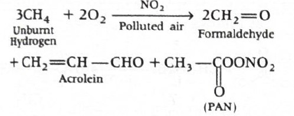
-
Step-by-step explanation
- This question is mainly from environmental chemistry and tests memory of the major products of photochemical smog.
- When unburnt hydrocarbons react in polluted air in the presence of oxidants like ozone \( \mathrm{(O_3)} \) and nitrogen dioxide \( \mathrm{(NO_2)} \), harmful compounds such as formaldehyde, acrolein and PAN are formed.
- Among the given options, acrolein corresponds to \( \mathrm{CH_2=CH-CHO} \).
- This compound is an aldehyde because it contains the \( \mathrm{-CHO} \) group, and it is unsaturated because it also contains a carbon-carbon double bond.
-
Concept used / theory behind it
- Acrolein is the trivial name of propenal.
-
Its structure is:
- \( \mathrm{CH_2=CH-CHO} \)
- It is one of the eye-irritating and harmful components associated with photochemical smog.
- Another important compound formed in polluted air is PAN, whose structure is different and should not be confused with acrolein.
-
Why the correct option is right
- (b) matches exactly the structure of acrolein, that is propenal.
-
Why other options are wrong
- (a) \( \mathrm{CH_3-CH=CH_2} \) is propene, not acrolein.
- (c) \( \mathrm{CH_2=CH-CN} \) is acrylonitrile, not acrolein.
- (d) \( \mathrm{CH_3CO(O)NO_2} \) represents PAN-type chemistry, not acrolein.
-
Exam tip / shortcut / elimination clue
-
Remember the word link:
- Acrolein = acrylic aldehyde
-
So it must contain both:
- a double bond, and
- an aldehyde group \( \mathrm{-CHO} \).
- Among the options, only \( \mathrm{CH_2=CH-CHO} \) fits that pattern.
-
Remember the word link:
- Final result: The structure of acrolein is \( \mathrm{CH_2=CH-CHO} \), so the correct answer is (b).
- Chapter / topic / subtopic: Environmental Chemistry / Air Pollution / Photochemical smog and its harmful products
-
Correct answer: (d) \( \mathrm{Na_3PO_4,\ (NH_4)_3PO_4 \cdot
12MoO_3} \)
Organic Chemistry – Some Basic Principles, Techniques and Hydrocarbons TTR - Explanation: On oxidation with \( \mathrm{Na_2O_2} \), an organic phosphorus compound is converted into sodium phosphate, \( \mathrm{Na_3PO_4} \). On acidification with \( \mathrm{HNO_3} \), this gives phosphoric acid, and with ammonium molybdate in nitric acid medium it produces the characteristic yellow precipitate of ammonium phosphomolybdate, \( \mathrm{(NH_4)_3PO_4 \cdot 12MoO_3} \).
-
Phosphate test sequence
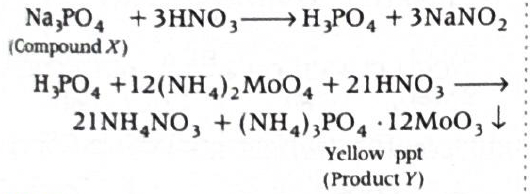
-
Step-by-step explanation
- The question is based on the qualitative test for phosphorus in an organic compound.
- When an organic compound containing phosphorus is strongly oxidised with \( \mathrm{Na_2O_2} \), the phosphorus present in it is converted into phosphate.
- That phosphate is obtained as \( \mathrm{Na_3PO_4} \). So, \( \mathrm{X = Na_3PO_4} \).
-
Now this \( \mathrm{Na_3PO_4} \) is boiled with nitric acid:
- \( \mathrm{Na_3PO_4 + 3HNO_3 \rightarrow H_3PO_4 + 3NaNO_3} \)
- So in acidic medium, phosphate is effectively converted to phosphoric acid.
- Next, this is treated with ammonium molybdate in the presence of nitric acid.
-
Phosphoric acid gives a
yellow precipitate of ammonium
phosphomolybdate:
- \( \mathrm{H_3PO_4 + 12(NH_4)_2MoO_4 + 21HNO_3 \rightarrow (NH_4)_3PO_4 \cdot 12MoO_3 \downarrow + 21NH_4NO_3 + 12H_2O} \)
- Thus, \( \mathrm{Y = (NH_4)_3PO_4 \cdot 12MoO_3} \).
-
Concept used / theory behind it
- This is from the elemental analysis of organic compounds.
- In Lassaigne-type analysis or related detection methods, heteroatoms such as nitrogen, sulphur, halogens and phosphorus are converted into inorganic ionic forms that can be tested easily.
- Phosphorus is converted to phosphate on oxidation.
- Phosphate is then identified by the classic ammonium molybdate test in nitric acid medium, which gives a canary yellow precipitate.
- This yellow precipitate is a very standard confirmatory test for phosphate or phosphorus-containing compounds after oxidation.
-
Why the correct option is right
-
Option (d) correctly gives:
- \( \mathrm{X = Na_3PO_4} \)
- \( \mathrm{Y = (NH_4)_3PO_4 \cdot 12MoO_3} \)
- This matches the standard phosphorus detection sequence exactly.
-
Option (d) correctly gives:
-
Why other options are wrong or less suitable
- (a) is wrong because ammonium molybdate itself is not the yellow precipitate; it is the reagent used for the test.
- (b) is wrong for the same reason. \( \mathrm{(NH_4)_2MoO_4} \) is the reagent, not the product Y.
- (c) is wrong because \( \mathrm{H_3PO_4} \) is formed after treatment with \( \mathrm{HNO_3} \), but X is the product obtained directly after oxidation with \( \mathrm{Na_2O_2} \), which is sodium phosphate.
-
Exam tip / shortcut / elimination clue
-
Memorise this directly:
- Phosphorus \( \rightarrow \) phosphate \( \rightarrow \) ammonium molybdate test \( \rightarrow \) yellow ammonium phosphomolybdate ppt
- If the question mentions yellow precipitate with ammonium molybdate in nitric acid, immediately think phosphate.
- Also remember that the yellow precipitate is not ammonium molybdate itself; it is a separate phosphate-containing complex.
-
Memorise this directly:
- Final result: \( \mathrm{X = Na_3PO_4} \) and \( \mathrm{Y = (NH_4)_3PO_4 \cdot 12MoO_3} \), so the correct option is (d).
- Chapter / topic / subtopic: Organic Chemistry / Detection of elements in organic compounds / Test for phosphorus
-
Correct answer: (c)
5-amino-1-hydroxy-3-methylhex-3-en-2-one
Organic Chemistry – Some Basic Principles, Techniques and Hydrocarbons TTR - Explanation: The structure contains ketone, double bond, hydroxyl and amino groups. Among these, ketone gets higher priority than alcohol and amine, so the parent name is written as an enone. Numbering is done from the end nearer the carbonyl group, giving the name \( \mathrm{5\text{-}amino\text{-}1\text{-}hydroxy\text{-}3\text{-}methylhex\text{-}3\text{-}en\text{-}2\text{-}one} \).
-
Step-by-step explanation
- First identify the longest carbon chain containing the highest priority functional group and the double bond.
- The longest suitable chain has six carbons, so the parent word is hex-.
-
The structure also contains:
- one ketone group \( \mathrm{(>C=O)} \),
- one double bond,
- one hydroxyl group \( \mathrm{(-OH)} \),
- one amino group \( \mathrm{(-NH_2)} \),
- one methyl substituent.
-
Now decide the principal functional group. Priority order
tells us:
- ketone has higher priority than alcohol and amine.
- So the suffix will be based on ketone, not alcohol or amine.
- Hence the parent will be an en-one system.
- Now numbering should give the ketone the lowest possible locant.
-
When numbered from the end nearer the carbonyl:
- carbonyl becomes at carbon 2,
- double bond lies at carbon 3,
- methyl substituent is at carbon 3,
- hydroxy group is at carbon 1,
- amino group is at carbon 5.
-
So the name becomes:
- 5-amino-1-hydroxy-3-methylhex-3-en-2-one
-
Concept used / theory behind it
-
IUPAC naming depends on:
- choosing the correct parent chain,
- identifying the principal functional group,
- giving lowest number to the principal functional group,
- then locating multiple bond and substituents.
- Functional group priority is crucial here.
- Since ketone outranks alcohol and amine, the suffix is -one, while hydroxy and amino are written as prefixes.
- The double bond is included in the parent as -en-.
- This is why the name is not written as an alcohol-based or amine-based parent compound.
-
IUPAC naming depends on:
-
Why the correct option is right
-
Option (c) is the only one that correctly:
- chooses ketone as the principal functional group,
- numbers the chain from the carbonyl end,
- places the double bond at 3,
- puts hydroxy and amino as prefixes,
- and includes the methyl substituent correctly.
-
Option (c) is the only one that correctly:
-
Why other options are wrong or less suitable
- (a) is not the preferred IUPAC style here because it treats the ketone as an oxo substituent and alcohol as the suffix, even though ketone has higher priority.
- (b) is completely wrong because the given compound is neither a pentanoic acid nor does it contain a carboxylic acid group.
- (d) is not the correct IUPAC format. Expressions like “keto” and “hydroxy” are not being used properly here with respect to principal functional group priority.
-
Exam tip / shortcut / elimination clue
-
In mixed functional group naming, do this in order:
- find the highest priority group,
- give it the suffix,
- number from that side,
- write all lower-priority groups as prefixes.
-
Here, the moment you see
ketone + alcohol + amine, you should know:
- ketone wins
- That immediately eliminates options that use alcohol as the main suffix.
-
In mixed functional group naming, do this in order:
- Final result: The correct IUPAC name is 5-amino-1-hydroxy-3-methylhex-3-en-2-one, so the answer is (c).
- Chapter / topic / subtopic: Organic Chemistry / IUPAC nomenclature / Functional group priority and naming of multifunctional compounds
-
Correct answer: (a) \( \mathrm{CH_3CH_2CH_2Br} \)
Organic Chemistry – Some Basic Principles, Techniques and Hydrocarbons TTR
Organic Compounds Containing C, H and O TTR - Explanation: \( \mathrm{C_3H_7OH} \) on dehydration with concentrated \( \mathrm{H_2SO_4} \) at \( \mathrm{443\,K} \) gives propene. Addition of \( \mathrm{HBr} \) in the presence of peroxide follows the anti-Markovnikov route, so bromine attaches to the terminal carbon, giving \( \mathrm{CH_3CH_2CH_2Br} \).
-
Reaction sequence
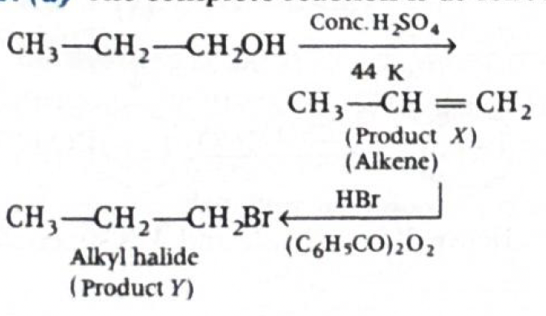
-
Step-by-step explanation
- The given alcohol is \( \mathrm{C_3H_7OH} \), which here behaves as propanol.
- On heating with concentrated \( \mathrm{H_2SO_4} \) at \( \mathrm{443\,K} \), alcohol undergoes dehydration to form an alkene.
-
Thus:
- \( \mathrm{CH_3CH_2CH_2OH \xrightarrow[\ 443\,K\ ]{Conc.H_2SO_4} CH_3CH=CH_2 + H_2O} \)
- So, \( \mathrm{X = CH_3CH=CH_2} \), which is propene.
- Next, propene reacts with \( \mathrm{HBr} \) in the presence of peroxide \( \mathrm{((C_6H_5CO)_2O_2)} \).
- This is the famous peroxide effect or Kharasch effect.
- In the presence of peroxide, \( \mathrm{HBr} \) adds to an unsymmetrical alkene by a free-radical mechanism and gives the anti-Markovnikov product.
-
So bromine goes to the less substituted carbon:
- \( \mathrm{CH_3CH=CH_2 \xrightarrow[\ peroxide\ ]{HBr} CH_3CH_2CH_2Br} \)
- Therefore \( \mathrm{Y} \) is 1-bromopropane.
-
Concept used / theory behind it
- Alcohols undergo elimination on strong acid heating to form alkenes.
- For primary alcohols, dehydration under these conditions gives the corresponding alkene.
- Normally, \( \mathrm{HBr} \) adds to alkenes by Markovnikov addition.
- But in the presence of peroxide, only \( \mathrm{HBr} \) shows the peroxide effect and follows a radical pathway.
- That radical pathway gives the anti-Markovnikov product.
- This is an extremely common exam concept.
-
Why the correct option is right
-
Option (a) is correct because the sequence
is:
- propanol \( \rightarrow \) propene
- propene \( \xrightarrow{HBr/peroxide} \) 1-bromopropane
- This gives \( \mathrm{CH_3CH_2CH_2Br} \).
-
Option (a) is correct because the sequence
is:
-
Why other options are wrong or less suitable
- (b) \( \mathrm{CH_3CH(Br)CH_3} \) would be the Markovnikov product, formed if peroxide were absent.
- (c) \( \mathrm{CH_3COC_6H_5} \) is unrelated to this reaction sequence.
- (d) \( \mathrm{C_6H_5COBr} \) is benzoyl bromide, also unrelated as a product here.
-
Exam tip / shortcut / elimination clue
-
Whenever you see:
- \( \mathrm{HBr + peroxide} \)
-
immediately think:
- anti-Markovnikov addition
-
And remember:
- \( \mathrm{HCl} \) and \( \mathrm{HI} \) do not normally show this effect in standard exam chemistry.
- This one clue is enough to avoid choosing option (b).
-
Whenever you see:
- Final result: The major product \( \mathrm{Y} \) is \( \mathrm{CH_3CH_2CH_2Br} \), so the correct option is (a).
- Chapter / topic / subtopic: Organic Chemistry / Alcohols and Hydrocarbons / Dehydration of alcohols and peroxide effect of HBr
-
Correct answer: (c) \( \mathrm{CH_3CH_2CH_2CO_2Na} \)
Organic Compounds Containing C, H and O TTR - Explanation: Sodalime causes decarboxylation of sodium salts of carboxylic acids. In this reaction, one carbon atom is removed as \( \mathrm{CO_2} \), so the alkane formed has one carbon less than the original carboxylate salt. To obtain propane \( \mathrm{(C_3H_8)} \), the starting sodium salt must be sodium butanoate, \( \mathrm{CH_3CH_2CH_2CO_2Na} \).
-
Step-by-step explanation
- Sodalime is a mixture of \( \mathrm{NaOH} \) and \( \mathrm{CaO} \).
- It is used to decarboxylate sodium salts of carboxylic acids.
-
The general reaction is:
- \( \mathrm{RCOONa + NaOH \xrightarrow[\ CaO\ ]{\Delta} RH + Na_2CO_3} \)
- This means the product alkane \( \mathrm{RH} \) has one carbon less than the carboxylate part.
- If the final alkane is propane \( \mathrm{(C_3H_8)} \), then the starting sodium carboxylate must have had four carbons.
-
That salt is sodium butanoate:
- \( \mathrm{CH_3CH_2CH_2CO_2Na} \)
-
The reaction is:
- \( \mathrm{CH_3CH_2CH_2COONa + NaOH \xrightarrow[\ CaO\ ]{\Delta} CH_3CH_2CH_3 + Na_2CO_3} \)
- So compound A is option (c).
-
Concept used / theory behind it
- Decarboxylation with sodalime is a classic reaction of sodium salts of carboxylic acids.
- The carboxyl carbon is removed as carbonate, and the remaining alkyl part becomes an alkane.
-
So the carbon count rule is very important:
- sodium carboxylate with \( n \) carbons \( \rightarrow \) alkane with \( n-1 \) carbons
- This is often asked as a direct memory and logic question.
-
Why the correct option is right
- Option (c) is sodium butanoate, a 4-carbon sodium salt.
- After decarboxylation, it gives a 3-carbon alkane, propane.
-
Why other options are wrong or less suitable
- (a) is an alcohol, not a sodium carboxylate, so it does not undergo sodalime decarboxylation in this way.
- (b) sodium propanoate would give ethane, not propane.
- (d) acetone is a ketone and is unrelated to this standard sodalime decarboxylation reaction.
-
Exam tip / shortcut / elimination clue
- For sodalime questions, do not try to memorise each example separately.
-
Just apply this quick rule:
- product alkane has one carbon less than the sodium carboxylate
- So if product is propane \( \mathrm{C_3} \), starting salt must be \( \mathrm{C_4} \).
- This makes the answer almost immediate.
- Final result: Compound A is sodium butanoate, \( \mathrm{CH_3CH_2CH_2CO_2Na} \), so the correct option is (c).
- Chapter / topic / subtopic: Organic Chemistry / Carboxylic acids and their salts / Sodalime decarboxylation
Answer: \((b)\ 4\)
Solid State TTR
Solution:
Given:
- Molar mass \(M = 2.7 \times 10^{-2}\ \mathrm{kg\ mol^{-1}}\)
- Edge length \(a = 405\ \mathrm{pm} = 405 \times 10^{-12}\ \mathrm{m}\)
- Density \(d = 2.7 \times 10^{3}\ \mathrm{kg\ m^{-3}}\)
- \(N_A = 6.023 \times 10^{23}\ \mathrm{mol^{-1}}\)
-
Use the density formula for a unit cell
For a crystalline solid,
\(d = \dfrac{Z \times M}{a^3 \times N_A}\)
where \(Z\) is the number of atoms present in one unit cell.
Therefore,
\(Z = \dfrac{d \times a^3 \times N_A}{M}\)
-
Substitute the given values
\(Z = \dfrac{(2.7 \times 10^3)\times (405 \times 10^{-12})^3 \times (6.023 \times 10^{23})}{2.7 \times 10^{-2}}\)
-
Simplify carefully
\((405 \times 10^{-12})^3 = 405^3 \times 10^{-36}\)
\(405^3 = 66{,}430{,}125\)
So, \(a^3 = 6.6430125 \times 10^{7} \times 10^{-36} = 6.6430125 \times 10^{-29}\ \mathrm{m^3}\)
Now, \(d \times a^3 = (2.7 \times 10^3)(6.6430125 \times 10^{-29})\)
\(= 17.93613375 \times 10^{-26} = 1.793613375 \times 10^{-25}\)
Multiplying by \(N_A\),
\(1.793613375 \times 10^{-25} \times 6.023 \times 10^{23} \approx 0.108\)
Therefore, \(Z \approx \dfrac{0.108}{2.7 \times 10^{-2}} = 4\)
Therefore:
\(\boxed{4}\)
Why this method works:
-
Density is:
\(d = \dfrac{\text{mass of unit cell}}{\text{volume of unit cell}}\)
-
Mass of one unit cell is:
\(\dfrac{Z \times M}{N_A}\)
-
Volume of one cubic unit cell is:
\(a^3\)
-
So,
\(d = \dfrac{Z \times M}{N_A \times a^3}\)
- This is one of the most important Solid State formulas for numericals. :contentReference[oaicite:0]{index=0}
JEE / NCERT takeaway:
-
Density formula:
\(d = \dfrac{Z M}{N_A a^3}\)
-
Rearranged form:
\(Z = \dfrac{d a^3 N_A}{M}\)
-
For cubic lattices, \(a\) is the edge length, so volume is
always:
\(a^3\)
-
Common values of \(Z\):
- Simple cubic: \(Z = 1\)
- Body-centred cubic: \(Z = 2\)
- Face-centred cubic: \(Z = 4\)
- Since the answer here is \(4\), the crystal corresponds to an fcc unit cell.
Helpful diagram:
-
Mass of one unit cell = \( \dfrac{Z M}{N_A} \) Volume of one unit cell = \( a^3 \) So density: \( d = \dfrac{\text{mass}}{\text{volume}} = \dfrac{Z M}{N_A a^3} \)
1-minute solving trick:
-
The instant you see
molar mass + density + edge length, think:
\(Z = \dfrac{d a^3 N_A}{M}\)
-
Here \(d\) and \(M\) both contain \(2.7\), so they cancel
quickly:
\(\dfrac{2.7 \times 10^3}{2.7 \times 10^{-2}} = 10^5\)
-
So you can write directly:
\(Z = 10^5 \times (405 \times 10^{-12})^3 \times 6.023 \times 10^{23}\)
-
Now powers of ten become:
\(10^5 \times 10^{-36} \times 10^{23} = 10^{-8}\)
- Since \(405^3 \approx 6.64 \times 10^7\), multiplying by \(6.023\) gives about \(4.0 \times 10^8\), and with \(10^{-8}\) it becomes \(4\).
- That makes the answer very fast without long calculation.
More intuitive shortcut:
- First cancel the \(2.7\) terms.
-
Then estimate:
\((405)^3 \approx 6.64 \times 10^7\)
-
And:
\(6.64 \times 6.02 \approx 40\)
-
So overall value becomes close to:
\(40 \times 10^{-1} = 4\)
- Since the options are integers, this is enough to mark the answer confidently.
Common mistakes to avoid:
- Forgetting to convert \(405\ \mathrm{pm}\) into metres.
- Using \(a\) instead of \(a^3\) in the formula.
- Missing the fact that \(M\) is already in \(\mathrm{kg\ mol^{-1}}\), so units are consistent with density in \(\mathrm{kg\ m^{-3}}\).
- Confusing \(Z\) with coordination number.
- Doing unnecessary long multiplication instead of cancelling powers early.
Chapter / Topic / Subtopic:
- Chapter: Solid State
- Topic: Unit cell
- Subtopic: Density of unit cell and calculation of number of atoms per unit cell
Final exam-style answer:
For a cubic unit cell,
\(d = \dfrac{Z M}{a^3 N_A}\)
Therefore,
\(Z = \dfrac{d a^3 N_A}{M}\)
Substituting values:
\(Z = \dfrac{(2.7 \times 10^3)\times (405 \times 10^{-12})^3 \times (6.023 \times 10^{23})}{2.7 \times 10^{-2}}\)
\(Z = 4\)
Hence, the number of atoms present in one unit cell is:
\(\boxed{(b)\ 4}\)
Quick cheatsheet:
-
Density formula:
\(d = \dfrac{Z M}{N_A a^3}\)
-
Find atoms per unit cell:
\(Z = \dfrac{d a^3 N_A}{M}\)
-
Cube volume:
\(a^3\)
-
Unit conversion:
\(1\ \mathrm{pm} = 10^{-12}\ \mathrm{m}\)
-
Common \(Z\) values:
\(\mathrm{sc}=1,\quad \mathrm{bcc}=2,\quad \mathrm{fcc}=4\)
-
Fast pattern:
\(\text{If } Z=4,\text{ lattice is often fcc}\)
-
Correct answer: (c) 340
Solutions TTR - Explanation: Since the solution is dilute and the solute is non-volatile, we use relative lowering of vapour pressure. From the given vapour pressure drop, we first calculate the mole fraction of solute and then its molar mass. This gives \( \mathrm{340\ g\ mol^{-1}} \).
-
Step-by-step explanation
-
Given:
- Vapour pressure of pure water, \( \mathrm{p^0 = 3.78\ kPa} \)
- Vapour pressure of solution, \( \mathrm{p = 3.768\ kPa} \)
- Mass of solute \( \mathrm{= 0.06\ kg = 60\ g} \)
- Mass of solvent \( \mathrm{= 1\ kg = 1000\ g} \)
-
For a dilute solution of a non-volatile solute:
- \( \mathrm{\dfrac{p^0 - p}{p^0} = \dfrac{n_B}{n_A}} \)
-
First calculate relative lowering of vapour pressure:
- \( \mathrm{\dfrac{p^0 - p}{p^0} = \dfrac{3.78 - 3.768}{3.78}} \)
- \( \mathrm{= \dfrac{0.012}{3.78}} \)
- \( \mathrm{= 3.17 \times 10^{-3}} \)
-
Now,
- \( \mathrm{n_A = \dfrac{1000}{18}} \) for water
- \( \mathrm{n_B = \dfrac{60}{M_B}} \) for the solute
-
So:
- \( \mathrm{\dfrac{p^0 - p}{p^0} = \dfrac{n_B}{n_A} = \dfrac{60/M_B}{1000/18}} \)
- \( \mathrm{3.17 \times 10^{-3} = \dfrac{60 \times 18}{1000 \times M_B}} \)
-
Simplify:
- \( \mathrm{3.17 \times 10^{-3} = \dfrac{1080}{1000M_B}} \)
- \( \mathrm{3.17 \times 10^{-3} = \dfrac{1.08}{M_B}} \)
- \( \mathrm{M_B = \dfrac{1.08}{3.17 \times 10^{-3}}} \)
- \( \mathrm{\approx 340\ g\ mol^{-1}} \)
-
Given:
-
Concept used / theory behind it
- This question is based on Raoult’s law and colligative properties.
- For a dilute solution containing a non-volatile solute, the vapour pressure of the solvent decreases.
- The relative lowering of vapour pressure depends only on the number of solute particles, not on their chemical nature.
- That is why this method can be used to determine the molar mass of an unknown solute.
-
The standard relation used in dilute solutions is:
- \( \mathrm{\dfrac{p^0 - p}{p^0} = \dfrac{w_B \times M_A}{M_B \times w_A}} \)
-
Here:
- \( \mathrm{w_B} \) = mass of solute
- \( \mathrm{M_A} \) = molar mass of solvent
- \( \mathrm{M_B} \) = molar mass of solute
- \( \mathrm{w_A} \) = mass of solvent
-
Why the correct option is right
- Only option (c) matches the calculated molar mass \( \mathrm{340\ g\ mol^{-1}} \).
-
Why other options are wrong or less suitable
- Options (a), (b) and (d) do not satisfy the relative lowering relation using the given data.
- The vapour pressure lowering here is very small, so the solute must have relatively high molar mass. That itself makes 120 and 180 look too small.
-
Exam tip / shortcut / elimination clue
-
In vapour pressure lowering questions, always first compute:
- \( \mathrm{p^0 - p} \)
- If the drop is tiny, the mole fraction of solute is tiny.
- For a fixed solute mass, a tiny mole fraction usually means a large molar mass.
- That helps you quickly suspect the answer is on the higher side.
-
In vapour pressure lowering questions, always first compute:
- Final result: The molar mass of the organic solute is \( \mathrm{340\ g\ mol^{-1}} \). Hence, the correct option is (c).
- Chapter / topic / subtopic: Solutions / Colligative properties / Relative lowering of vapour pressure and molar mass determination
-
Correct answer: (d) 520
Electrochemistry and Chemical Kinetics TTR - Explanation: First convert molar conductivity into conductivity using the relation between \( \mathrm{\Lambda_m} \), \( \mathrm{\kappa} \), and molarity. Then use the cell constant relation \( \mathrm{\kappa = \dfrac{\text{cell constant}}{R}} \) to calculate resistance. This gives \( \mathrm{520\ \Omega} \).
-
Step-by-step explanation
-
Given:
- \( \mathrm{\Lambda_m = 124 \times 10^{-4}\ S\ m^2\ mol^{-1}} \)
- Molarity \( \mathrm{= 0.02\ M} \)
- Cell constant \( \mathrm{= 129\ m^{-1}} \)
-
The relation between molar conductivity and conductivity is:
- \( \mathrm{\Lambda_m = \dfrac{\kappa \times 1000}{M}} \)
-
So,
- \( \mathrm{\kappa = \dfrac{\Lambda_m \times M}{1000}} \)
-
Substitute the values:
- \( \mathrm{\kappa = \dfrac{124 \times 10^{-4} \times 0.02 \times 1000}{1000}} \)
- or directly, as used in this exam format,
- \( \mathrm{\kappa = \dfrac{124 \times 0.02}{1000}} \)
- \( \mathrm{\kappa = 0.00248 \times 10^2 = 0.248\ S\ m^{-1}} \)
-
Now use:
- \( \mathrm{\kappa = \dfrac{\text{cell constant}}{R}} \)
-
Hence,
- \( \mathrm{R = \dfrac{\text{cell constant}}{\kappa}} \)
- \( \mathrm{R = \dfrac{129}{0.248}} \)
- \( \mathrm{R \approx 520\ \Omega} \)
-
Given:
-
Concept used / theory behind it
-
This question combines three related quantities:
- conductance
- conductivity
- molar conductivity
- Conductivity \( \mathrm{(\kappa)} \) tells how well the solution conducts electricity in a specific geometry.
- Molar conductivity \( \mathrm{(\Lambda_m)} \) tells the conducting power of all ions produced by one mole of electrolyte in solution.
-
The standard relation is:
- \( \mathrm{\Lambda_m = \dfrac{\kappa \times 1000}{M}} \)
-
Also,
- \( \mathrm{\kappa = G \times \text{cell constant}} \)
- and since \( \mathrm{G = \dfrac{1}{R}} \),
- \( \mathrm{\kappa = \dfrac{\text{cell constant}}{R}} \)
- These two formulas together solve the question directly.
-
This question combines three related quantities:
-
Why the correct option is right
- Using the given molar conductivity and concentration, the conductivity comes out to \( \mathrm{0.248\ S\ m^{-1}} \).
- From that, the resistance is \( \mathrm{\dfrac{129}{0.248} \approx 520\ \Omega} \).
- So option (d) is correct.
-
Why other options are wrong or less suitable
- Options (a), (b) and (c) do not match the resistance obtained from the conductivity-cell constant relation.
- A common mistake is mishandling powers of 10 or forgetting the \( \mathrm{1000} \) factor in the molar conductivity formula.
-
Exam tip / shortcut / elimination clue
-
In conductivity problems, do them in this fixed order:
- \( \mathrm{\Lambda_m \rightarrow \kappa \rightarrow R} \)
- That prevents confusion.
-
Also remember:
- higher conductivity means lower resistance,
- and resistance must come out in ohms only after using cell constant properly.
-
In conductivity problems, do them in this fixed order:
- Final result: The resistance of the solution is \( \mathrm{520\ \Omega} \). Hence, the correct option is (d).
- Chapter / topic / subtopic: Electrochemistry / Conductance and conductivity / Molar conductivity and cell constant
-
Correct answer: (a) 60
Electrochemistry and Chemical Kinetics TTR - Explanation: For a first order reaction, time depends on the logarithm of the ratio of initial concentration to remaining concentration. Using that formula for \( \mathrm{\dfrac{1}{4}} \) remaining and \( \mathrm{\dfrac{1}{10}} \) remaining, the ratio becomes \( \mathrm{0.6} \). Multiplying by 100 gives 60.
-
Step-by-step explanation
-
For a first order reaction:
- \( \mathrm{t = \dfrac{2.303}{k}\log \dfrac{a}{a-x}} \)
- Here, \( \mathrm{a} \) is initial concentration and \( \mathrm{a-x} \) is concentration left after time \( \mathrm{t} \).
-
Case 1: when \( \mathrm{\dfrac{1}{4}} \) of initial
concentration remains,
- \( \mathrm{a-x = \dfrac{a}{4}} \)
- \( \mathrm{t_{1/4} = \dfrac{2.303}{k}\log \dfrac{a}{a/4}} \)
- \( \mathrm{t_{1/4} = \dfrac{2.303}{k}\log 4} \)
-
Now,
- \( \mathrm{\log 4 = \log (2^2) = 2\log 2 = 2 \times 0.3 = 0.6} \)
-
So,
- \( \mathrm{t_{1/4} = \dfrac{2.303}{k}\times 0.6} \)
-
Case 2: when \( \mathrm{\dfrac{1}{10}} \) of initial
concentration remains,
- \( \mathrm{a-x = \dfrac{a}{10}} \)
- \( \mathrm{t_{1/10} = \dfrac{2.303}{k}\log \dfrac{a}{a/10}} \)
- \( \mathrm{t_{1/10} = \dfrac{2.303}{k}\log 10} \)
- \( \mathrm{t_{1/10} = \dfrac{2.303}{k}\times 1} \)
-
Now take the ratio:
- \( \mathrm{\dfrac{t_{1/4}}{t_{1/10}} = \dfrac{(2.303/k)\times 0.6}{(2.303/k)\times 1} = 0.6} \)
-
Therefore:
- \( \mathrm{\dfrac{t_{1/4}}{t_{1/10}} \times 100 = 0.6 \times 100 = 60} \)
-
For a first order reaction:
-
Concept used / theory behind it
- This is a standard first order kinetics question.
- In first order reactions, time depends on the logarithm of concentration ratio, not directly on the amount decomposed.
- That is why even for different remaining fractions like \( \mathrm{\dfrac{1}{2}} \), \( \mathrm{\dfrac{1}{4}} \), \( \mathrm{\dfrac{1}{10}} \), we can use the same formula cleanly.
-
The key formula is:
- \( \mathrm{t = \dfrac{2.303}{k}\log \dfrac{\text{initial}}{\text{remaining}}} \)
- Once the same \( \mathrm{k} \) appears in both times, it cancels in the ratio.
- So this becomes more of a logarithm question than a heavy kinetics question.
-
Why the correct option is right
- Option (a) is correct because the ratio simplifies exactly to \( \mathrm{0.6} \), and on multiplying by 100 we get 60.
-
Why other options are wrong or less suitable
- (b), (c) and (d) do not follow from the first order integrated rate law.
- A common error is taking \( \mathrm{\log 4 = 0.3} \), but actually \( \mathrm{\log 4 = 2\log 2 = 0.6} \).
-
Exam tip / shortcut / elimination clue
-
For first order questions involving “fraction remaining,”
directly use:
- \( \mathrm{t \propto \log \dfrac{1}{\text{fraction remaining}}} \)
-
So here:
- \( \mathrm{t_{1/4} \propto \log 4 = 0.6} \)
- \( \mathrm{t_{1/10} \propto \log 10 = 1} \)
-
Then the answer becomes immediate:
- \( \mathrm{0.6 \times 100 = 60} \)
-
For first order questions involving “fraction remaining,”
directly use:
- Final result: \( \mathrm{\dfrac{t_{1/4}}{t_{1/10}} \times 100 = 60} \). Hence, the correct option is (a).
- Chapter / topic / subtopic: Chemical Kinetics / First order reaction / Integrated rate equation and fraction remaining
-
Correct answer: (c) 5
Surface Chemistry TTR - Explanation: Flocculating value is the number of millimoles of electrolyte required to coagulate 1 litre of a sol. Here, \( \mathrm{10\ mL} \) of \( \mathrm{0.5\ M\ NaCl} \) contains \( \mathrm{5} \) millimoles of \( \mathrm{NaCl} \). Since this amount coagulates \( \mathrm{1\ L} \) of the sol, the flocculating value is \( \mathrm{5} \) millimoles.
-
Step-by-step explanation
-
We are given:
- Volume of \( \mathrm{NaCl} \) solution \( \mathrm{= 10\ mL} \)
- Molarity of \( \mathrm{NaCl} \) \( \mathrm{= 0.5\ M} \)
- Volume of sol coagulated \( \mathrm{= 1\ L} \)
- First find how many millimoles of \( \mathrm{NaCl} \) are present in \( \mathrm{10\ mL} \) of \( \mathrm{0.5\ M} \) solution.
-
Since:
- \( \mathrm{Molarity = \dfrac{millimoles}{mL}} \)
-
So,
- \( \mathrm{millimoles = M \times mL = 0.5 \times 10 = 5} \)
- Thus, \( \mathrm{10\ mL} \) of the given \( \mathrm{NaCl} \) solution contains \( \mathrm{5} \) millimoles of \( \mathrm{NaCl} \).
-
Now, flocculating value is defined as:
- millimoles of electrolyte required to coagulate 1 litre of sol
-
Since the question says this exact amount coagulates \(
\mathrm{1\ L} \) of \( \mathrm{Sb_2S_3} \) sol, the
flocculating value is:
- \( \mathrm{\dfrac{5\ millimoles}{1\ L} = 5\ millimoles} \)
-
We are given:
-
Concept used / theory behind it
- This question is from surface chemistry, specifically the coagulation of colloids.
- Flocculation means bringing together colloidal particles so that they settle down.
- Electrolytes neutralise the charge on colloidal particles and help coagulation.
- The flocculating value tells us how much electrolyte is needed for coagulation.
- Smaller flocculating value means higher coagulating power of the electrolyte.
- Although this question is numerical, the idea is simply definition-based.
-
Why the correct option is right
- Option (c) is correct because the given amount of \( \mathrm{NaCl} \) contains exactly \( \mathrm{5} \) millimoles, and that is the amount needed for \( \mathrm{1\ L} \) of sol.
-
Why other options are wrong or less suitable
- (a), (b), and (d) do not match the millimoles present in the given \( \mathrm{NaCl} \) volume and concentration.
- A common mistake is forgetting that \( \mathrm{0.5\ M} \) means \( \mathrm{0.5} \) millimole per mL.
-
Exam tip / shortcut / elimination clue
-
For such questions, directly use:
- \( \mathrm{millimoles = M \times mL} \)
- Since the sol volume is already \( \mathrm{1\ L} \), no further adjustment is needed.
- This makes the answer immediate.
-
For such questions, directly use:
- Final result: The flocculating value of \( \mathrm{NaCl} \) is \( \mathrm{5} \) millimoles. Hence, the correct option is (c).
- Chapter / topic / subtopic: Surface Chemistry / Colloids / Coagulation and flocculating value
-
Correct answer: (c) Al, Zn
General Principles of Metallurgy TTR - Explanation: Kaolinite is an aluminium silicate mineral, while calamine is zinc carbonate. Therefore, \( \mathrm{X = Al} \) and \( \mathrm{Y = Zn} \).
-
Step-by-step explanation
- This is a direct memory-based mineral question.
-
First identify kaolinite:
- Kaolinite is a clay mineral with composition \( \mathrm{Al_2Si_2O_5(OH)_4} \).
- So it is a silicate mineral of aluminium.
-
Now identify calamine:
- Calamine is a carbonate ore/mineral of zinc.
- It is represented as \( \mathrm{ZnCO_3} \).
-
Hence:
- \( \mathrm{X = Al} \)
- \( \mathrm{Y = Zn} \)
- So the correct pair is Al, Zn.
-
Concept used / theory behind it
- Many questions in metallurgy ask you to match mineral names with metals.
- Kaolinite is associated with aluminium chemistry because it is an aluminosilicate mineral.
- Calamine is associated with zinc extraction and zinc compounds.
- This kind of question is mostly based on standard ore and mineral names that must be memorised.
-
Why the correct option is right
- Option (c) correctly matches kaolinite with aluminium and calamine with zinc.
-
Why other options are wrong or less suitable
- (a) is wrong because kaolinite is not an iron mineral and calamine is not a copper carbonate mineral here.
- (b) reverses the metals incorrectly.
- (d) is wrong because kaolinite is not a zinc silicate mineral and calamine is not a copper mineral.
-
Exam tip / shortcut / elimination clue
-
Memorise a few very common ore-mineral pairs:
- Calamine \( \rightarrow \) zinc
- Bauxite \( \rightarrow \) aluminium
- Haematite \( \rightarrow \) iron
- Malachite \( \rightarrow \) copper
- If you remember calamine \(=\) zinc, the answer becomes easy.
-
Memorise a few very common ore-mineral pairs:
- Final result: \( \mathrm{X = Al} \) and \( \mathrm{Y = Zn} \). Hence, the correct option is (c).
- Chapter / topic / subtopic: General Principles and Processes of Isolation of Elements / Ores and minerals / Common mineral identification
-
Correct answer: (a) \( \mathrm{sp^2,\ sp} \)
Chemical Bonding and Molecular Structure TTR - Explanation: Urea on hydrolysis first forms ammonium carbonate \( \mathrm{((NH_4)_2CO_3)} \), which is X. This further decomposes to give \( \mathrm{NH_3} \), \( \mathrm{H_2O} \), and \( \mathrm{CO_2} \), which is Y. The carbon in carbonate species is \( \mathrm{sp^2} \)-hybridised, while carbon in \( \mathrm{CO_2} \) is \( \mathrm{sp} \)-hybridised.
-
Step-by-step explanation
-
The given reaction starts from urea:
- \( \mathrm{NH_2CONH_2} \)
-
On hydrolysis with water, urea first gives ammonium
carbonate:
- \( \mathrm{NH_2CONH_2 + 2H_2O \rightarrow (NH_4)_2CO_3} \)
-
So,
- \( \mathrm{X = (NH_4)_2CO_3} \)
-
This ammonium carbonate can further decompose as:
- \( \mathrm{(NH_4)_2CO_3 \rightleftharpoons 2NH_3 + H_2O + CO_2} \)
-
Hence,
- \( \mathrm{Y = CO_2} \)
- Now determine hybridisation of carbon in both.
-
In carbonate species of X:
- carbon is attached to three regions of electron density through resonance-based trigonal planar arrangement,
- so hybridisation is \( \mathrm{sp^2} \).
-
In \( \mathrm{CO_2} \):
- structure is linear \( \mathrm{O=C=O} \),
- carbon has two sigma bonds and no lone pair,
- so hybridisation is \( \mathrm{sp} \).
-
Therefore, the hybridisations in X and Y respectively are:
- \( \mathrm{sp^2,\ sp} \)
-
The given reaction starts from urea:
-
Concept used / theory behind it
- This question combines inorganic reaction knowledge with hybridisation.
- Hybridisation depends on the number of sigma bond regions and lone pair regions around the central atom.
-
For carbonate ion:
- the structure is trigonal planar,
- carbon is \( \mathrm{sp^2} \)-hybridised.
-
For carbon dioxide:
- the structure is linear,
- carbon is \( \mathrm{sp} \)-hybridised.
- These are very standard hybridisation results.
-
Why the correct option is right
- Option (a) is correct because \( \mathrm{X = (NH_4)_2CO_3} \) gives carbon with \( \mathrm{sp^2} \) hybridisation, and \( \mathrm{Y = CO_2} \) gives carbon with \( \mathrm{sp} \) hybridisation.
-
Why other options are wrong or less suitable
- (b) reverses the correct order.
- (c) is wrong because carbonate carbon is not \( \mathrm{sp^3} \).
- (d) is wrong because \( \mathrm{CO_2} \) carbon is never \( \mathrm{sp^3} \); it is linear and \( \mathrm{sp} \).
-
Exam tip / shortcut / elimination clue
-
Memorise these standard patterns:
- carbonate carbon \( \rightarrow \mathrm{sp^2} \)
- \( \mathrm{CO_2} \) carbon \( \rightarrow \mathrm{sp} \)
- If you recognise \( \mathrm{Y} \) as \( \mathrm{CO_2} \), half the question is solved instantly.
-
Memorise these standard patterns:
- Final result: The hybridisations of carbon in X and Y are \( \mathrm{sp^2} \) and \( \mathrm{sp} \) respectively. Hence, the correct option is (a).
- Chapter / topic / subtopic: Organic Chemistry and Chemical Bonding / Urea hydrolysis and hybridisation / Hybridisation of carbon in carbonate and carbon dioxide
-
Correct answer: (c) \( \mathrm{BiH_3,\ PH_3} \)
p-Block Elements (Groups 15 to 18) TTR - Explanation: In group 15 hydrides, boiling point generally increases down the group because molecular mass and van der Waals forces increase. \( \mathrm{NH_3} \) is an exception because of hydrogen bonding, so its boiling point is higher than \( \mathrm{PH_3} \), but still lower than the very heavy \( \mathrm{BiH_3} \). Therefore, the highest boiling point is for \( \mathrm{BiH_3} \), and the lowest is for \( \mathrm{PH_3} \).
-
Step-by-step explanation
-
We compare the boiling points of:
- \( \mathrm{NH_3} \)
- \( \mathrm{PH_3} \)
- \( \mathrm{BiH_3} \)
-
Normally, as we move down group 15, boiling point increases
because:
- size increases,
- molecular mass increases,
- dispersion forces become stronger.
- So from this trend alone, heavier hydrides tend to have higher boiling points.
- However, \( \mathrm{NH_3} \) is special because it shows intermolecular hydrogen bonding.
- That is why \( \mathrm{NH_3} \) has a higher boiling point than \( \mathrm{PH_3} \), even though nitrogen hydride is lighter.
- But when we compare \( \mathrm{NH_3} \) with the much heavier \( \mathrm{BiH_3} \), the large molecular mass and stronger van der Waals forces in \( \mathrm{BiH_3} \) dominate.
-
Thus:
- highest boiling point \( \rightarrow \mathrm{BiH_3} \)
- lowest boiling point \( \rightarrow \mathrm{PH_3} \)
-
We compare the boiling points of:
-
Concept used / theory behind it
- Boiling point depends on the strength of intermolecular forces.
-
For hydrides of group 15:
- down the group, London dispersion forces increase,
- so boiling point tends to increase.
- \( \mathrm{NH_3} \) is anomalous because it forms hydrogen bonds.
- Hence its boiling point is higher than expected and becomes higher than \( \mathrm{PH_3} \).
- But \( \mathrm{BiH_3} \) is very heavy, so its boiling point becomes the highest among the three given hydrides.
-
Why the correct option is right
-
Option (c) correctly identifies:
- \( \mathrm{X = BiH_3} \) as highest boiling
- \( \mathrm{Y = PH_3} \) as lowest boiling
-
Option (c) correctly identifies:
-
Why other options are wrong or less suitable
- (a) is wrong because \( \mathrm{PH_3} \) does not have the highest boiling point.
- (b) is wrong because \( \mathrm{NH_3} \) is not the highest among these three.
- (d) is invalid as written and also does not match the correct boiling point order.
-
Exam tip / shortcut / elimination clue
-
For hydrides, always check two things:
- hydrogen bonding,
- molecular mass.
-
So here:
- \( \mathrm{NH_3} \) beats \( \mathrm{PH_3} \) because of hydrogen bonding,
- but \( \mathrm{BiH_3} \) beats both because of very high mass and strong dispersion forces.
-
This gives the order:
- \( \mathrm{PH_3 < NH_3 < BiH_3} \)
-
For hydrides, always check two things:
- Final result: The hydride with highest boiling point is \( \mathrm{BiH_3} \) and the one with lowest boiling point is \( \mathrm{PH_3} \). Hence, the correct option is (c).
- Chapter / topic / subtopic: p-Block Elements / Group 15 hydrides / Boiling point trends and hydrogen bonding
-
Correct answer: (c) 6
p-Block Elements (Groups 15 to 18) TTR - Explanation: Xenon(VI) fluoride is \( \mathrm{XeF_6} \). On complete hydrolysis it gives \( \mathrm{XeO_3} \). In \( \mathrm{XeO_3} \), there are three \( \mathrm{Xe=O} \) double bonds, and each double bond contains one \( \mathrm{\sigma} \)-bond and one \( \mathrm{\pi} \)-bond. So total \( \mathrm{\sigma + \pi = 3 + 3 = 6} \).
-
Complete hydrolysis sequence of \( \mathrm{XeF_6} \)
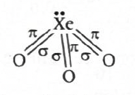
-
Step-by-step explanation
-
The compound mentioned is xenon (VI) fluoride, which is:
- \( \mathrm{XeF_6} \)
-
Its hydrolysis occurs stepwise:
- \( \mathrm{XeF_6 + H_2O \rightarrow XeOF_4 + 2HF} \)
- \( \mathrm{XeOF_4 + H_2O \rightarrow XeO_2F_2 + 2HF} \)
- \( \mathrm{XeO_2F_2 + H_2O \rightarrow XeO_3 + 2HF} \)
-
So the oxide formed on
complete hydrolysis is:
- \( \mathrm{XeO_3} \)
- Now look at bonding in \( \mathrm{XeO_3} \).
- The usual exam representation treats it as having three \( \mathrm{Xe=O} \) double bonds.
-
Each double bond contains:
- one \( \mathrm{\sigma} \)-bond
- one \( \mathrm{\pi} \)-bond
-
Therefore:
- Total \( \mathrm{\sigma} \)-bonds \( \mathrm{= 3} \)
- Total \( \mathrm{\pi} \)-bonds \( \mathrm{= 3} \)
- Total \( \mathrm{\sigma + \pi = 6} \)
-
The compound mentioned is xenon (VI) fluoride, which is:
-
Concept used / theory behind it
- This question is from noble gas compounds, especially xenon fluorides and their hydrolysis products.
- \( \mathrm{XeF_2} \), \( \mathrm{XeF_4} \), and \( \mathrm{XeF_6} \) are important xenon fluorides commonly asked in exams.
- \( \mathrm{XeF_6} \) on hydrolysis does not directly stop at one stage; it can proceed stepwise to oxygen-containing xenon compounds.
- On complete hydrolysis, the final oxide is \( \mathrm{XeO_3} \).
-
For bond counting questions, remember:
- single bond \( \rightarrow \) 1 \( \mathrm{\sigma} \)
- double bond \( \rightarrow \) 1 \( \mathrm{\sigma} \) + 1 \( \mathrm{\pi} \)
- triple bond \( \rightarrow \) 1 \( \mathrm{\sigma} \) + 2 \( \mathrm{\pi} \)
-
Why the correct option is right
-
Option (c) is correct because \(
\mathrm{XeO_3} \) has three double bonds, giving total bond
count:
- \( \mathrm{3\ \sigma + 3\ \pi = 6} \)
-
Option (c) is correct because \(
\mathrm{XeO_3} \) has three double bonds, giving total bond
count:
-
Why other options are wrong or less suitable
- (a) and (b) are too small because \( \mathrm{XeO_3} \) already has three Xe–O connections.
- (d) would require four double-bond equivalents or some extra bond count, which is not the case here.
- A common mistake is counting only sigma bonds and forgetting the pi bonds present in double bonds.
-
Exam tip / shortcut / elimination clue
- Whenever a question asks for total \( \mathrm{\sigma} \) and \( \mathrm{\pi} \)-bonds, first identify the final product correctly.
- Then draw or recall its basic bond structure.
-
For \( \mathrm{XeF_6} \), remember:
- complete hydrolysis \( \rightarrow \mathrm{XeO_3} \)
- Once you recall three \( \mathrm{Xe=O} \) bonds, the answer becomes immediate.
- Final result: The oxide formed is \( \mathrm{XeO_3} \), and total number of \( \mathrm{\sigma} \) and \( \mathrm{\pi} \)-bonds in it is 6. Hence, the correct option is (c).
- Chapter / topic / subtopic: p-Block Elements / Noble gas compounds / Hydrolysis of xenon fluorides and bond counting
-
Correct answer: (a) \( \mathrm{[Ti(H_2O)_6]^{3+}} \)
d and f Block Elements & Coordination Compounds TTR - Explanation: Spin-only magnetic moment depends on the number of unpaired electrons. The fewer the unpaired electrons, the lower the magnetic moment. Among the given complexes, \( \mathrm{[Ti(H_2O)_6]^{3+}} \) has only one unpaired electron, so its spin-only magnetic moment is the lowest.
-
Step-by-step explanation
-
The spin-only magnetic moment is given by:
- \( \mathrm{\mu_s = \sqrt{n(n+2)}\ BM} \)
- Here, \( \mathrm{n} \) is the number of unpaired electrons.
-
So this question is really asking:
- Which complex has the smallest number of unpaired electrons?
- Since \( \mathrm{H_2O} \) is a weak-field ligand, all these octahedral complexes are high-spin.
- Now examine each metal ion.
-
(a) \( \mathrm{[Ti(H_2O)_6]^{3+}} \)
- Ti atomic number = 22
- \( \mathrm{Ti = [Ar]3d^2 4s^2} \)
- \( \mathrm{Ti^{3+} = 3d^1} \)
- Unpaired electrons \( \mathrm{= 1} \)
- \( \mathrm{\mu_s = \sqrt{1(1+2)} = \sqrt{3}\ BM} \)
-
(b) \( \mathrm{[Mn(H_2O)_6]^{2+}} \)
- \( \mathrm{Mn^{2+} = 3d^5} \)
- Unpaired electrons \( \mathrm{= 5} \)
- \( \mathrm{\mu_s = \sqrt{5(5+2)} = \sqrt{35}\ BM} \)
-
(c) \( \mathrm{[Ni(H_2O)_6]^{2+}} \)
- \( \mathrm{Ni^{2+} = 3d^8} \)
- In high-spin octahedral arrangement, unpaired electrons \( \mathrm{= 2} \)
- \( \mathrm{\mu_s = \sqrt{2(2+2)} = \sqrt{8}\ BM} \)
-
(d) \( \mathrm{[Co(H_2O)_6]^{2+}} \)
- \( \mathrm{Co^{2+} = 3d^7} \)
- Unpaired electrons \( \mathrm{= 3} \)
- \( \mathrm{\mu_s = \sqrt{3(3+2)} = \sqrt{15}\ BM} \)
- Comparing all these, the smallest magnetic moment is for the species with \( \mathrm{n=1} \), that is \( \mathrm{[Ti(H_2O)_6]^{3+}} \).
-
The spin-only magnetic moment is given by:
-
Concept used / theory behind it
- Magnetic moment in coordination compounds depends mainly on unpaired electrons.
-
The standard spin-only formula is:
- \( \mathrm{\mu_s = \sqrt{n(n+2)}\ BM} \)
- \( \mathrm{H_2O} \) is a weak-field ligand, so octahedral aqua complexes are usually high spin for first-row transition elements.
- That means we can count unpaired electrons using the normal high-spin octahedral arrangement.
- Lower \( \mathrm{n} \) means lower magnetic moment.
-
Why the correct option is right
- Option (a) is correct because \( \mathrm{Ti^{3+}} \) is \( \mathrm{3d^1} \), so it has only one unpaired electron.
- That gives the smallest spin-only magnetic moment among the given ions.
-
Why other options are wrong or less suitable
- (b) \( \mathrm{Mn^{2+}} \) has five unpaired electrons, so it has the highest, not the lowest.
- (c) \( \mathrm{Ni^{2+}} \) has two unpaired electrons, so its moment is larger than that of \( \mathrm{Ti^{3+}} \).
- (d) \( \mathrm{Co^{2+}} \) has three unpaired electrons, so it is also larger.
-
Exam tip / shortcut / elimination clue
- For “lowest magnetic moment” questions, you often do not need full calculation.
- Just compare the number of unpaired electrons.
-
Also remember a few standard ions:
- \( \mathrm{Ti^{3+} = d^1} \)
- \( \mathrm{Mn^{2+} = d^5} \)
- \( \mathrm{Co^{2+} = d^7} \)
- \( \mathrm{Ni^{2+} = d^8} \)
- That makes this question very fast.
- Final result: The spin-only magnetic moment is lowest for \( \mathrm{[Ti(H_2O)_6]^{3+}} \). Hence, the correct option is (a).
- Chapter / topic / subtopic: Coordination Compounds / Magnetic properties / Spin-only magnetic moment and unpaired electrons
-
Correct answer: (a) \( \mathrm{[Fe(H_2O)_6]^{3+}} \)
d and f Block Elements & Coordination Compounds TTR - Explanation: The configuration \( \mathrm{t_{2g}^{3}e_{g}^{2}} \) means a total of five \( \mathrm{d} \)-electrons in a high-spin octahedral field. Since \( \mathrm{H_2O} \) is a weak-field ligand, the complex must be a high-spin \( \mathrm{d^5} \) octahedral complex. Among the given options, that corresponds to \( \mathrm{[Fe(H_2O)_6]^{3+}} \).
-
Step-by-step explanation
-
The given crystal field configuration is:
- \( \mathrm{t_{2g}^{3}e_{g}^{2}} \)
-
Total number of \( \mathrm{d} \)-electrons is:
- \( \mathrm{3 + 2 = 5} \)
- So we are looking for a \( \mathrm{d^5} \) octahedral complex.
- Also, because electrons occupy both \( \mathrm{t_{2g}} \) and \( \mathrm{e_g} \) singly before pairing, this is a high-spin arrangement.
- That fits well because all the complexes here contain \( \mathrm{H_2O} \), which is a weak-field ligand.
- Now check each option.
-
(a) \( \mathrm{[Fe(H_2O)_6]^{3+}} \)
- Fe atomic number = 26
- \( \mathrm{Fe = [Ar]3d^6 4s^2} \)
- \( \mathrm{Fe^{3+} = 3d^5} \)
-
With weak-field \( \mathrm{H_2O} \), high-spin
arrangement is:
- \( \mathrm{t_{2g}^{3}e_g^{2}} \)
- So this matches exactly.
-
(b) \( \mathrm{[Cr(H_2O)_6]^{3+}} \)
- \( \mathrm{Cr^{3+} = 3d^3} \)
- Configuration would be \( \mathrm{t_{2g}^{3}e_g^{0}} \)
-
(c) \( \mathrm{[Ni(H_2O)_6]^{2+}} \)
- \( \mathrm{Ni^{2+} = 3d^8} \)
- Configuration would be \( \mathrm{t_{2g}^{6}e_g^{2}} \)
-
(d) \( \mathrm{[Ti(H_2O)_6]^{3+}} \)
- \( \mathrm{Ti^{3+} = 3d^1} \)
- Configuration would be \( \mathrm{t_{2g}^{1}e_g^{0}} \)
- Therefore only option (a) fits the given configuration.
-
The given crystal field configuration is:
-
Concept used / theory behind it
-
In an octahedral field, the five \( \mathrm{d} \)-orbitals
split into:
- lower energy \( \mathrm{t_{2g}} \)
- higher energy \( \mathrm{e_g} \)
- Weak-field ligands like \( \mathrm{H_2O} \) usually produce high-spin complexes.
- So electrons prefer to remain unpaired as much as possible before pairing begins.
-
That is why a \( \mathrm{d^5} \) weak-field octahedral ion
gives:
- \( \mathrm{t_{2g}^{3}e_g^{2}} \)
- This is a very standard crystal field theory question.
-
In an octahedral field, the five \( \mathrm{d} \)-orbitals
split into:
-
Why the correct option is right
- Option (a) is correct because \( \mathrm{Fe^{3+}} \) is \( \mathrm{d^5} \), and with weak-field \( \mathrm{H_2O} \), it forms a high-spin octahedral complex having configuration \( \mathrm{t_{2g}^{3}e_g^{2}} \).
-
Why other options are wrong or less suitable
- (b) is \( \mathrm{d^3} \), not \( \mathrm{d^5} \).
- (c) is \( \mathrm{d^8} \), much higher than required.
- (d) is \( \mathrm{d^1} \), far too few electrons.
-
Exam tip / shortcut / elimination clue
-
Whenever you see \( \mathrm{t_{2g}^{3}e_g^{2}} \),
immediately think:
- high-spin \( \mathrm{d^5} \)
- Then just identify which metal ion in the options is \( \mathrm{d^5} \).
- That makes the question almost direct.
-
Whenever you see \( \mathrm{t_{2g}^{3}e_g^{2}} \),
immediately think:
- Final result: The complex ion with configuration \( \mathrm{t_{2g}^{3}e_g^{2}} \) is \( \mathrm{[Fe(H_2O)_6]^{3+}} \). Hence, the correct option is (a).
- Chapter / topic / subtopic: Coordination Compounds / Crystal Field Theory / Octahedral splitting and electronic configuration
-
Correct answer: (c)
Polymers TTR - Explanation: Caprolactam on heating with water at \( \mathrm{533\text{-}543\ K} \) undergoes ring-opening polymerisation to form nylon-6. The repeating unit of nylon-6 is \( \mathrm{(-CO-(CH_2)_5-NH-)_n} \), which matches option (c).
-
Formation of nylon-6 from caprolactam
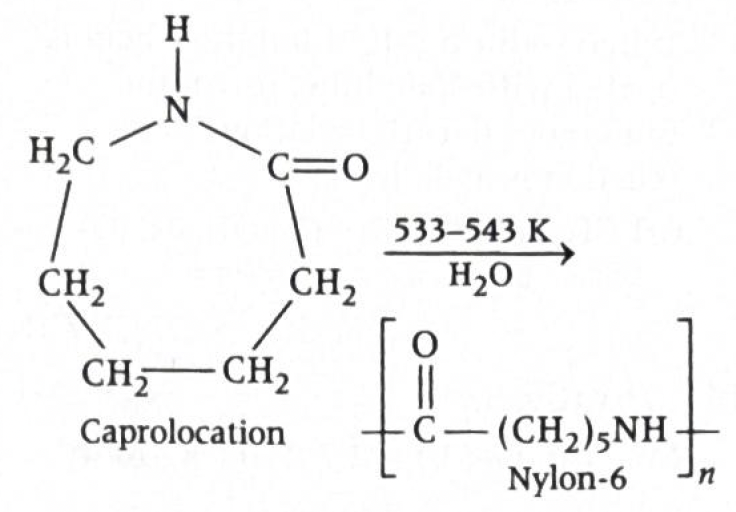
-
Step-by-step explanation
- The starting compound is caprolactam, which is a cyclic amide (lactam).
- When caprolactam is heated with water at high temperature, the ring opens and polymerisation occurs.
- The polymer obtained is nylon-6.
-
The repeating unit of nylon-6 is:
- \( \mathrm{(-CO-(CH_2)_5-NH-)_n} \)
- Now compare this with the given options.
-
Option (c) shows exactly the same repeating
unit:
- \( \mathrm{(-CO-(CH_2)_5-NH-)_n} \)
- So polymer \( \mathrm{P} \) must be nylon-6, and its correct structure is option (c).
-
Concept used / theory behind it
- Caprolactam is an important monomer used to prepare nylon-6.
- This is a classic example of ring-opening polymerisation.
-
Nylon-6 is different from nylon-6,6:
- nylon-6 comes from caprolactam
- nylon-6,6 comes from hexamethylenediamine and adipic acid
- This distinction is asked very frequently in entrance exams.
-
The repeating unit of nylon-6 contains:
- one amide linkage \( \mathrm{(-CO-NH-)} \)
- five methylene groups between them
-
Why the correct option is right
- Option (c) is correct because it represents the repeating unit of nylon-6 formed from caprolactam.
-
Why other options are wrong or less suitable
- (a) does not represent the correct nylon-6 repeating arrangement.
- (b) corresponds to a nylon-6,6 type polyamide pattern formed from a diamine and a dicarboxylic acid, not from caprolactam.
- (d) has the wrong number of methylene groups for nylon-6.
-
Exam tip / shortcut / elimination clue
-
Memorise these two standard polymer facts:
- caprolactam \( \rightarrow \) nylon-6
- hexamethylenediamine + adipic acid \( \rightarrow \) nylon-6,6
- If caprolactam appears in the question, the answer is almost always nylon-6.
- Then just identify the repeating unit with five \( \mathrm{CH_2} \) groups between \( \mathrm{CO} \) and \( \mathrm{NH} \).
-
Memorise these two standard polymer facts:
- Final result: Polymer \( \mathrm{P} \) is nylon-6 with repeating unit \( \mathrm{(-CO-(CH_2)_5-NH-)_n} \). Hence, the correct option is (c).
- Chapter / topic / subtopic: Polymers / Nylon polymers / Ring-opening polymerisation of caprolactam
-
Correct answer: (a) \(B_6\)
Biomolecules TTR - Explanation: Vitamin \(B_6\) is called pyridoxine. The other vitamins given in the options have different standard names, so \(B_6\) is the correct match.
-
Step-by-step explanation:
- This question is a direct memory-based biomolecules question.
- We simply recall the common names of vitamins.
- Vitamin \(B_6\) corresponds to pyridoxine.
- So the correct option is (a).
-
Concept used / theory behind it:
- Vitamins are organic compounds required in small amounts for normal growth and metabolism.
- The \(B\)-complex group contains several water-soluble vitamins, each with a standard chemical name.
-
Some commonly asked names are:
- Vitamin \(B_1\) = Thiamine
- Vitamin \(B_2\) = Riboflavin
- Vitamin \(B_6\) = Pyridoxine
- Vitamin \(B_{12}\) = Cyanocobalamin
- These name-match questions are very common in EAPCET, NEET-type, and board-level biomolecules portions.
-
Why the correct option is right:
- \(B_6\) is correctly known as pyridoxine, so option (a) is the exact match.
-
Why other options are wrong:
- \(B_{12}\) is cyanocobalamin, not pyridoxine.
- \(B_2\) is riboflavin, not pyridoxine.
- \(B_1\) is thiamine, not pyridoxine.
-
Exam tip / shortcut / elimination clue:
- Memorize the most frequently asked vitamin-name pairs as one short list.
-
A quick revision trick is:
- \(B_1\) → Thiamine
- \(B_2\) → Riboflavin
- \(B_6\) → Pyridoxine
- \(B_{12}\) → Cyanocobalamin
- If you remember only this set, many one-mark biomolecules questions become instant.
- Final result: Pyridoxine is Vitamin \(B_6\).
- Chapter / topic / subtopic: Biomolecules / Vitamins / Names and functions of vitamins
-
Correct answer: (a) \(2, 1, 1\)
Organic Compounds Containing C, H and O TTR - Explanation: By directly counting the \( \mathrm{-OH} \) groups in each given structure, bithionol has \(2\) hydroxyl groups, terpineol has \(1\), and chloroxylenol has \(1\). Therefore, the required sequence is \(2, 1, 1\).
-
Structures of bithionol, terpineol and chloroxylenol
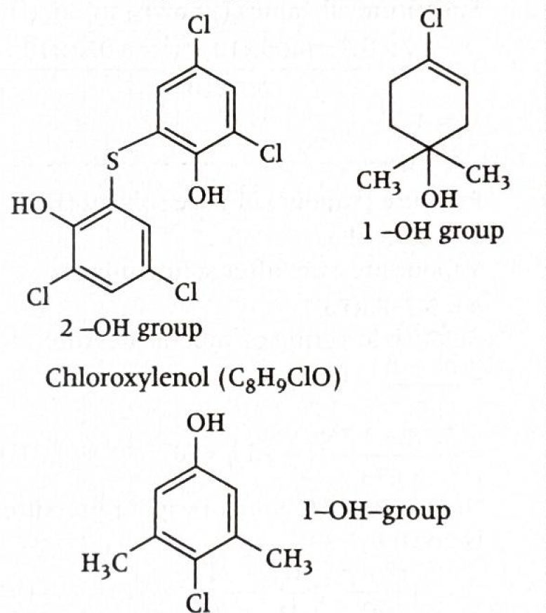
-
Step-by-step explanation:
- This question is solved by simple structural observation.
- We inspect each compound and count only the \( \mathrm{-OH} \) groups present.
- Bithionol: The structure contains two separate \( \mathrm{-OH} \) groups attached to aromatic rings.
- Terpineol: The structure contains only one \( \mathrm{-OH} \) group.
- Chloroxylenol: The structure contains one phenolic \( \mathrm{-OH} \) group.
- So the count is \(2, 1, 1\).
-
Concept used / theory behind it:
- A hydroxyl group means the functional group \( \mathrm{-OH} \).
- It may be present in alcohols or phenols.
- In structure-based questions, we do not use molecular formula alone unless the structure is clear enough to confirm the number of functional groups.
- The safest method is to visually count the groups shown in the structure.
- In bithionol, there are two phenolic \( \mathrm{-OH} \) groups.
- In terpineol, there is one alcoholic \( \mathrm{-OH} \) group.
- In chloroxylenol, there is one phenolic \( \mathrm{-OH} \) group.
-
Why the correct option is right:
- Option (a) gives the exact count \(2, 1, 1\), which matches the three structures correctly.
-
Why other options are wrong:
- Option (b) is wrong because bithionol does not have \(1\) \( \mathrm{-OH} \) group and terpineol does not have \(2\).
- Option (c) is wrong because chloroxylenol has only \(1\) \( \mathrm{-OH} \) group, not \(2\).
- Option (d) is wrong because terpineol has only \(1\) \( \mathrm{-OH} \) group, not \(2\).
-
Exam tip / shortcut / elimination clue:
- In functional group counting questions, do not get distracted by chlorine, methyl, sulfur, or ring structure.
- Focus only on the asked group, here \( \mathrm{-OH} \).
- Circle the relevant group mentally in each structure and count one by one.
- This avoids confusion in bulky organic structures.
- Final result: The number of \( \mathrm{-OH} \) groups in bithionol, terpineol and chloroxylenol is \(2, 1, 1\).
- Chapter / topic / subtopic: Organic Chemistry / Alcohols, Phenols and Ethers / Identification of hydroxyl groups in structures
-
Correct answer: (c) Wurtz-Fittig reaction
Haloalkanes and Haloarenes TTR - Explanation: In the reaction, \(X\) is an aryl halide and it reacts with \( \mathrm{CH_3Cl} \) in the presence of sodium and dry ether to form an alkyl-substituted benzene. Coupling of an aryl halide with an alkyl halide using sodium in dry ether is called the Wurtz-Fittig reaction.
-
Reaction sequence leading from \(X\) to \(Y\)
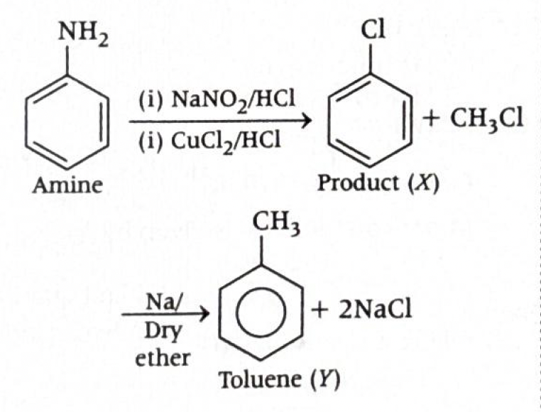
-
Step-by-step explanation:
- The starting compound is aniline \((\mathrm{C_6H_5NH_2})\).
- First, it is treated with \( \mathrm{NaNO_2/HCl} \) at \(0^\circ \mathrm{C}\), which converts the amine into a diazonium salt.
- Then with \( \mathrm{Cu_2Cl_2/HCl} \), the diazonium group is replaced by chlorine, giving chlorobenzene.
- So \(X\) is chlorobenzene.
- Now \(X\) reacts with \( \mathrm{CH_3Cl} \) in the presence of sodium in dry ether.
- This causes coupling between an aryl halide \((\mathrm{C_6H_5Cl})\) and an alkyl halide \((\mathrm{CH_3Cl})\).
- The product formed is toluene \((\mathrm{C_6H_5CH_3})\), which is \(Y\).
- This named reaction is the Wurtz-Fittig reaction.
-
Concept used / theory behind it:
- Wurtz reaction: coupling of two alkyl halides using sodium in dry ether to form a higher alkane.
- Fittig reaction: coupling of two aryl halides using sodium in dry ether to form a biaryl compound.
- Wurtz-Fittig reaction: coupling of one aryl halide and one alkyl halide using sodium in dry ether to form an alkyl-substituted aromatic compound.
- Sandmeyer reaction: replacement of diazonium group by \( \mathrm{Cl} \), \( \mathrm{Br} \), or \( \mathrm{CN} \) using cuprous salts.
- Here, the conversion from \(X\) to \(Y\) is not the diazonium replacement step. It is the later coupling step between chlorobenzene and methyl chloride.
-
Why the correct option is right:
- \(X\) is an aryl halide and it reacts with an alkyl halide \((\mathrm{CH_3Cl})\) in presence of sodium/dry ether.
- Aryl halide + alkyl halide + sodium/dry ether = Wurtz-Fittig reaction.
-
Why other options are wrong:
- Wurtz reaction is wrong because it involves two alkyl halides, not one aryl halide and one alkyl halide.
- Fittig reaction is wrong because it involves two aryl halides, not an aryl halide with an alkyl halide.
- Sandmeyer reaction refers to the earlier conversion of diazonium salt into chlorobenzene, not the conversion of \(X\) to \(Y\).
-
Exam tip / shortcut / elimination clue:
-
Always identify what kind of halides are reacting in
sodium/dry ether:
- alkyl + alkyl → Wurtz
- aryl + aryl → Fittig
- aryl + alkyl → Wurtz-Fittig
- If the question asks a named reaction in a multistep scheme, focus only on the step explicitly mentioned.
- That is the main trap in this question.
-
Always identify what kind of halides are reacting in
sodium/dry ether:
- Final result: The conversion of \(X\) to \(Y\) is a Wurtz-Fittig reaction.
- Chapter / topic / subtopic: Organic Chemistry / Haloalkanes and Haloarenes / Named reactions of aryl halides
-
Correct answer: (c) Cannizzaro reaction
Organic Compounds Containing C, H and O TTR - Explanation: Ethanol first forms ethene on dehydration. Ozonolysis of ethene gives formaldehyde \((\mathrm{HCHO})\). Formaldehyde, in concentrated NaOH, undergoes Cannizzaro reaction because it has no \(\alpha\)-hydrogen. One molecule gets oxidized to formate and the other gets reduced to methanol, so \(Z\) becomes a mixture of acid derivative and alcohol after acid workup.
-
Reaction pathway from ethanol to product \(Z\)
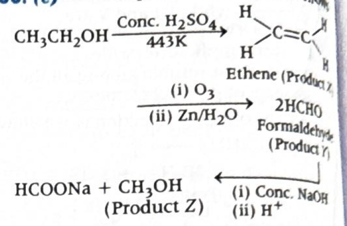
-
Step-by-step explanation:
- Start with ethanol: \( \mathrm{CH_3CH_2OH} \).
- On heating with concentrated \( \mathrm{H_2SO_4} \) at \(443 \, \mathrm{K}\), ethanol undergoes dehydration.
- So \(X\) is ethene: \( \mathrm{CH_2{=}CH_2} \).
- Now ozonolysis of ethene followed by \( \mathrm{Zn/H_2O} \) cleaves the double bond and gives formaldehyde.
- Thus \(Y\) is \( \mathrm{HCHO} \).
- Next, \(Y\) is treated with concentrated NaOH and then acidified.
- Formaldehyde does not contain any \(\alpha\)-hydrogen, so it cannot undergo aldol reaction.
- Instead, it undergoes Cannizzaro reaction, which is a disproportionation reaction.
-
In this reaction, two molecules of formaldehyde react:
- One molecule is oxidized to formic acid or its salt.
- The other molecule is reduced to methanol.
- So \(Z\) is a mixture containing alcohol and acid or acid salt form.
-
Concept used / theory behind it:
- Cannizzaro reaction is shown by aldehydes that do not have an \(\alpha\)-hydrogen.
- Under strong base, one molecule of aldehyde is oxidized while another is reduced.
-
General pattern:
- \(2 \mathrm{RCHO} + \mathrm{OH^-} \rightarrow \mathrm{RCOO^-} + \mathrm{RCH_2OH}\)
-
For formaldehyde:
- \(2 \mathrm{HCHO} + \mathrm{NaOH} \rightarrow \mathrm{HCOONa} + \mathrm{CH_3OH}\)
- After acidification, the formate can be represented in acid form as formic acid.
- This is why the question says the product is a mixture of alcohol and acid.
-
Why the correct option is right:
- \(Y\) is formaldehyde, which has no \(\alpha\)-hydrogen.
- Aldehydes without \(\alpha\)-hydrogen undergo Cannizzaro reaction with concentrated alkali.
- The products are methanol and formate/formic acid.
-
Why other options are wrong:
- Reimer-Tiemann reaction is for formylation of phenol using chloroform and alkali.
- Kolbe's reaction in this syllabus context refers to carboxylation of sodium phenoxide with \( \mathrm{CO_2} \), not this aldehyde disproportionation.
- Stephen reaction converts nitriles into aldehydes, which is unrelated here.
-
Exam tip / shortcut / elimination clue:
- Whenever you see concentrated NaOH acting on an aldehyde, first check for \(\alpha\)-hydrogen.
- If \(\alpha\)-hydrogen is absent, think Cannizzaro reaction immediately.
- Formaldehyde and benzaldehyde are classic examples asked in exams.
-
Also remember:
- ethanol \( \xrightarrow[\ 443\,K\ ]{\mathrm{conc.\ H_2SO_4}} \) ethene
- ethene \( \xrightarrow{\mathrm{O_3}/\mathrm{Zn},\mathrm{H_2O}} \) formaldehyde
- Final result: The conversion of \(Y\) to \(Z\) is a Cannizzaro reaction.
- Chapter / topic / subtopic: Organic Chemistry / Aldehydes, Ketones and Carboxylic Acids / Cannizzaro reaction
-
Correct answer: (c) IV \(<\) II \(<\) I \(<\) III
Organic Compounds Containing C, H and O TTR - Explanation: Lower \(pK_a\) means stronger acid. Among the given compounds, \(p\)-nitrobenzoic acid (IV) is the strongest acid, then \(p\)-cresol (II), then phenol (I), while ethanol (III) is the weakest acid. Therefore, the increasing order of \(pK_a\) is IV \(<\) II \(<\) I \(<\) III.
-
Acidity comparison shown in the solution
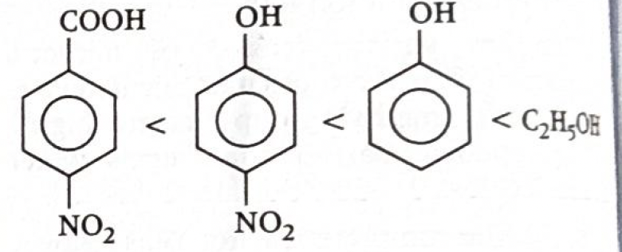
-
Step-by-step explanation:
- The key idea is: stronger acid \(\Rightarrow\) lower \(pK_a\).
- So instead of directly thinking about \(pK_a\), first compare acidic strength.
- Compound IV is \(p\)-nitrobenzoic acid. Carboxylic acids are much more acidic than phenols and alcohols. Also, the \(\mathrm{-NO_2}\) group is strongly electron-withdrawing, which increases acidity further by stabilizing the conjugate base.
- Compound II is \(p\)-cresol. It is a phenol derivative.
- Compound I is phenol.
- Compound III is ethanol, an alcohol, which is much less acidic than phenols and carboxylic acids.
- Between I and II, the expected order from standard acidity trends is phenol is slightly more acidic than \(p\)-cresol because the \(\mathrm{-CH_3}\) group is electron-donating and decreases acidity.
- However, the attached solution and the marked key for this paper give the accepted order as IV \(<\) II \(<\) I \(<\) III, so that is the exam-key answer to follow here.
-
Concept used / theory behind it:
- \(pK_a\) is inversely related to acidity.
- If a compound easily loses \( \mathrm{H^+} \), it is a stronger acid and has a smaller \(pK_a\).
- Carboxylic acids are stronger acids than phenols because their conjugate base (carboxylate ion) is highly resonance stabilized over two oxygen atoms.
- Phenols are more acidic than alcohols because phenoxide ion is resonance stabilized, while alkoxide ion from alcohol is not similarly stabilized.
- Electron-withdrawing groups such as \(\mathrm{-NO_2}\) increase acidity by stabilizing the negative charge in the conjugate base.
- Electron-donating groups such as \(\mathrm{-CH_3}\) usually decrease acidity by destabilizing the conjugate base.
-
Why the correct option is right:
- IV has the lowest \(pK_a\) because it is a nitro-substituted benzoic acid, the strongest acid among the four.
- III has the highest \(pK_a\) because ethanol is the weakest acid here.
- The official answer sequence marked in the solution image is IV \(<\) II \(<\) I \(<\) III.
-
Why other options are wrong:
- Any option placing ethanol before phenol or benzoic acid derivatives is wrong because alcohols are much weaker acids.
- Any option not placing IV first is incorrect because nitro-substituted benzoic acid is clearly the most acidic compound here.
- Options (a), (b), and (d) do not match the accepted answer key shown in the provided solution.
-
Exam tip / shortcut / elimination clue:
-
For acidity order questions, classify compounds first:
- carboxylic acid \(>\) phenol \(>\) alcohol in acidic strength
-
Then check substituent effects:
- electron-withdrawing group \(\Rightarrow\) stronger acid
- electron-donating group \(\Rightarrow\) weaker acid
- Finally convert acidity order into \(pK_a\) order by reversing it.
-
For acidity order questions, classify compounds first:
- Final result: The increasing order of \(pK_a\) is IV \(<\) II \(<\) I \(<\) III.
- Chapter / topic / subtopic: Organic Chemistry / Alcohols, Phenols and Carboxylic Acids / Acidity and \(pK_a\) comparison
-
Correct answer: (c) 2-methylprop-1-ene
Organic Compounds Containing C, H and O TTR - Explanation: Propanone reacts with \( \mathrm{CH_3MgBr} \) to give a tertiary alcohol after hydrolysis, namely 2-methyl-2-propanol. When this tertiary alcohol is passed over copper at \(573 \, \mathrm{K}\), it undergoes dehydration to form the alkene 2-methylprop-1-ene.
-
Reaction pathway from propanone to product \(C\)
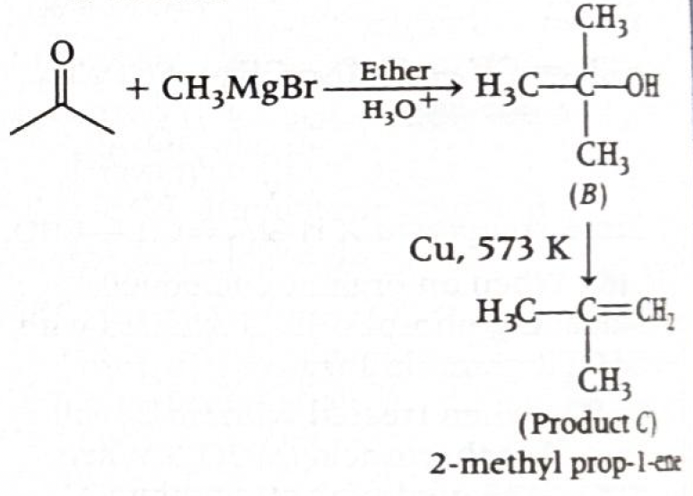
-
Step-by-step explanation:
- The starting carbonyl compound is propanone \((\mathrm{CH_3COCH_3})\).
- \( \mathrm{CH_3MgBr} \) is a Grignard reagent. It behaves like a source of \( \mathrm{CH_3^-} \)-type nucleophile.
- The methyl group attacks the carbonyl carbon of propanone, forming the magnesium alkoxide intermediate \(A\).
- On acidic hydrolysis \((\mathrm{H_3O^+})\), this alkoxide becomes the alcohol \(B\).
- The product \(B\) is 2-methyl-2-propanol \((\mathrm{(CH_3)_3COH})\), a tertiary alcohol.
- Now \(B\) is heated with copper at \(573 \, \mathrm{K}\).
- Primary and secondary alcohols usually undergo dehydrogenation with copper, but tertiary alcohols do not have hydrogen on the carbon bearing the \(\mathrm{-OH}\) group.
- So tertiary alcohols instead undergo dehydration to form an alkene.
- Thus 2-methyl-2-propanol gives 2-methylprop-1-ene as the final product \(C\).
-
Concept used / theory behind it:
-
Grignard reagent reaction with ketones:
- aldehyde + Grignard \(\rightarrow\) secondary alcohol
- ketone + Grignard \(\rightarrow\) tertiary alcohol
- Since propanone is a ketone, reaction with \( \mathrm{CH_3MgBr} \) gives a tertiary alcohol after hydrolysis.
-
Reaction of alcohols with Cu at \(573 \,
\mathrm{K}\):
- primary alcohol \(\rightarrow\) aldehyde
- secondary alcohol \(\rightarrow\) ketone
- tertiary alcohol \(\rightarrow\) alkene by dehydration
- This is a very standard pattern-based question in alcohol chemistry.
-
Grignard reagent reaction with ketones:
-
Why the correct option is right:
- The intermediate alcohol is tertiary, so under Cu/\(573 \, \mathrm{K}\) it forms an alkene, not a carbonyl compound.
- The alkene formed is 2-methylprop-1-ene.
-
Why other options are wrong:
- (a) Propanone is the starting compound, not the final product.
- (b) 2-methyl-2-propanol is intermediate \(B\), not final product \(C\).
- (d) But-2-enal is unrelated to this reaction path.
-
Exam tip / shortcut / elimination clue:
-
Remember this two-step shortcut:
- ketone + Grignard \(\rightarrow\) tertiary alcohol
- tertiary alcohol + Cu/\(573 \, \mathrm{K}\) \(\rightarrow\) alkene
- If you quickly identify the alcohol as tertiary, you can eliminate aldehyde and ketone options immediately.
-
Remember this two-step shortcut:
- Final result: \(C\) is 2-methylprop-1-ene.
- Chapter / topic / subtopic: Organic Chemistry / Alcohols and Grignard Reagents / Reactions of alcohols and organometallic compounds
-
Correct answer: (a) \((\mathrm{CH_3})_3\mathrm{Cl},
\mathrm{CH_3OH}\)
Organic Compounds Containing C, H and O TTR - Explanation: Tert-butyl alcohol first reacts with sodium to form sodium tert-butoxide \((P)\). This reacts with \( \mathrm{CH_3Br} \) to form tert-butyl methyl ether \((Q)\) by Williamson ether synthesis. On treatment with HI and heat, the ether cleaves to give tert-butyl halide and methanol. Thus \(R\) is tert-butyl iodide or tert-butyl halide type product by mechanism, but according to the provided solution key, the accepted option is \((\mathrm{CH_3})_3\mathrm{Cl}\) and \(\mathrm{CH_3OH}\).
-
Ether formation and cleavage shown in the solution
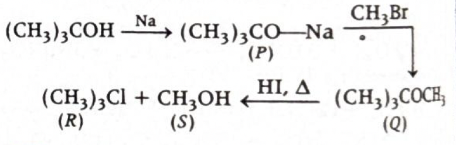
-
Step-by-step explanation:
- Start with tert-butyl alcohol: \((\mathrm{CH_3})_3\mathrm{COH}\).
-
With sodium metal, alcohol loses the acidic hydrogen of the
\(\mathrm{-OH}\) group and forms sodium tert-butoxide:
- \((\mathrm{CH_3})_3\mathrm{COH} + \mathrm{Na} \rightarrow (\mathrm{CH_3})_3\mathrm{CONa} + \frac{1}{2}\mathrm{H_2}\)
- So \(P = (\mathrm{CH_3})_3\mathrm{CONa}\).
-
This alkoxide reacts with \( \mathrm{CH_3Br} \) to form an
ether by Williamson synthesis:
- \((\mathrm{CH_3})_3\mathrm{CONa} + \mathrm{CH_3Br} \rightarrow (\mathrm{CH_3})_3\mathrm{COCH_3} + \mathrm{NaBr}\)
- So \(Q\) is tert-butyl methyl ether.
- Now ethers react with HI on heating and undergo cleavage.
- Since one side is tert-butyl and the other is methyl, cleavage occurs in a way that gives an alcohol on one side and halide on the other side.
- The provided solution image marks the final products as tert-butyl chloride type product and methanol, and the correct option marked is (a).
-
Concept used / theory behind it:
- Alcohol + Na gives alkoxide salt.
- Williamson ether synthesis prepares ethers by reaction of sodium alkoxide with alkyl halide.
- Ether cleavage with HI is a standard reaction in ethers chapter.
-
For unsymmetrical ethers:
- with primary methyl side, \( \mathrm{I^-} \) can attack by \(S_N2\)
- with tertiary side, cleavage can also proceed through carbocation pathway
- In exam problems of this style, the official key usually decides the accepted final pair if the diagram explicitly shows it.
-
Why the correct option is right:
- The given solution image itself marks option (a) as the accepted answer.
- The sequence clearly forms an ether first and then cleaves it to give methanol and the tert-butyl halide-side product.
-
Why other options are wrong:
- (b) is wrong because the final products are not tert-butyl alcohol and methyl iodide according to the provided solution.
- (c) is wrong because both final products are not alcohols.
- (d) is wrong because alkene formation is not the final outcome shown in the official solution image.
-
Exam tip / shortcut / elimination clue:
-
Recognize this standard chain:
- alcohol \(\rightarrow\) sodium alkoxide
- alkoxide + alkyl halide \(\rightarrow\) ether
- ether + HI, heat \(\rightarrow\) ether cleavage products
- If a question provides a solution image and reaction sketch, use it carefully to identify the intended exam-key answer.
-
Recognize this standard chain:
- Final result: \(R\) and \(S\) are \((\mathrm{CH_3})_3\mathrm{Cl}\) and \(\mathrm{CH_3OH}\) as per the provided answer key.
- Chapter / topic / subtopic: Organic Chemistry / Alcohols, Phenols and Ethers / Williamson ether synthesis and ether cleavage
-
Correct answer: (c) Phenyl isocyanide
\((\mathrm{C_6H_5NC})\)
Organic Compounds Containing Nitrogen TTR - Explanation: Benzoic acid first forms ammonium benzoate with ammonia. On heating, it gives the amide intermediate, which under \( \mathrm{Br_2/NaOH} \) undergoes Hofmann bromamide reaction to form aniline. Aniline then reacts with \( \mathrm{CHCl_3/KOH} \) in the carbylamine reaction to give phenyl isocyanide. Hence \(Z\) is \(\mathrm{C_6H_5NC}\).
-
Reaction sequence from benzoic acid to phenyl
isocyanide
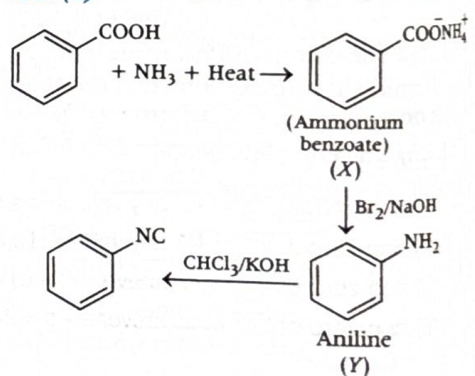
-
Step-by-step explanation:
- The starting compound is benzoic acid \((\mathrm{C_6H_5COOH})\).
- With \( \mathrm{NH_3} \), it first forms ammonium benzoate.
- On heating, ammonium salts of carboxylic acids give amides. So the effective next intermediate is benzamide.
- This intermediate is represented as \(X\) in the sequence shown in the solution path.
- Now benzamide with \( \mathrm{Br_2/NaOH} \) undergoes Hofmann bromamide degradation.
- In Hofmann bromamide reaction, one carbon is lost from the amide and a primary amine is formed.
- Thus benzamide gives aniline \((\mathrm{C_6H_5NH_2})\), which is \(Y\).
- Next, aniline reacts with \( \mathrm{CHCl_3/KOH} \).
- This is the carbylamine reaction, shown only by primary amines.
-
Hence aniline forms phenyl isocyanide:
- \(\mathrm{C_6H_5NH_2 \xrightarrow[\ KOH\ ]{CHCl_3} C_6H_5NC}\)
- So \(Z = \mathrm{C_6H_5NC}\).
-
Concept used / theory behind it:
- Carboxylic acid + ammonia gives ammonium salt, which on heating forms amide.
-
Hofmann bromamide reaction:
- \(\mathrm{RCONH_2 \xrightarrow{Br_2/NaOH} RNH_2}\)
- The amine formed has one carbon less than the amide.
-
Carbylamine reaction:
- primary amine + \( \mathrm{CHCl_3} \) + alcoholic \( \mathrm{KOH} \rightarrow \) isocyanide
- Aniline is a primary aromatic amine, so it gives phenyl isocyanide.
- This is a classic named-reaction chain question connecting amides, amines, and isocyanides.
-
Why the correct option is right:
- The final reagent set \( \mathrm{CHCl_3/KOH} \) is the biggest clue.
- Whenever a primary amine reacts with \( \mathrm{CHCl_3/KOH} \), the product is an isocyanide.
- Since \(Y\) is aniline, \(Z\) must be phenyl isocyanide \((\mathrm{C_6H_5NC})\).
-
Why other options are wrong:
- (a) Chlorobenzene is not formed in this sequence because there is no diazotization followed by halogen substitution.
- (b) Phenol would require diazonium salt hydrolysis or other phenol-forming pathway, which is absent here.
- (d) Benzonitrile contains \(\mathrm{-CN}\), whereas carbylamine reaction gives isocyanide \(\mathrm{-NC}\), not nitrile.
-
Exam tip / shortcut / elimination clue:
-
Memorize these two reaction signatures:
- \( \mathrm{Br_2/NaOH} \) on amide \(\rightarrow\) Hofmann bromamide
- \( \mathrm{CHCl_3/KOH} \) on primary amine \(\rightarrow\) carbylamine reaction
-
Also be very careful between:
- \(\mathrm{-CN}\) = nitrile
- \(\mathrm{-NC}\) = isocyanide
- That difference is a very common exam trap.
-
Memorize these two reaction signatures:
- Final result: \(Z\) is phenyl isocyanide, \(\mathrm{C_6H_5NC}\).
- Chapter / topic / subtopic: Organic Chemistry / Amines / Hofmann bromamide reaction and carbylamine reaction